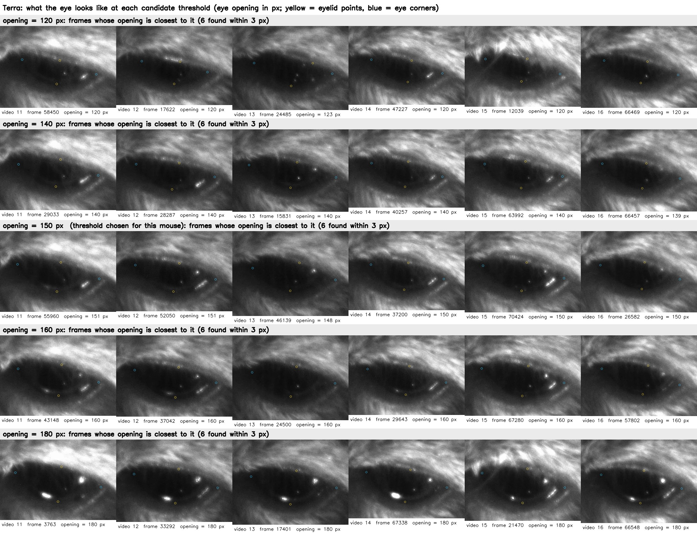
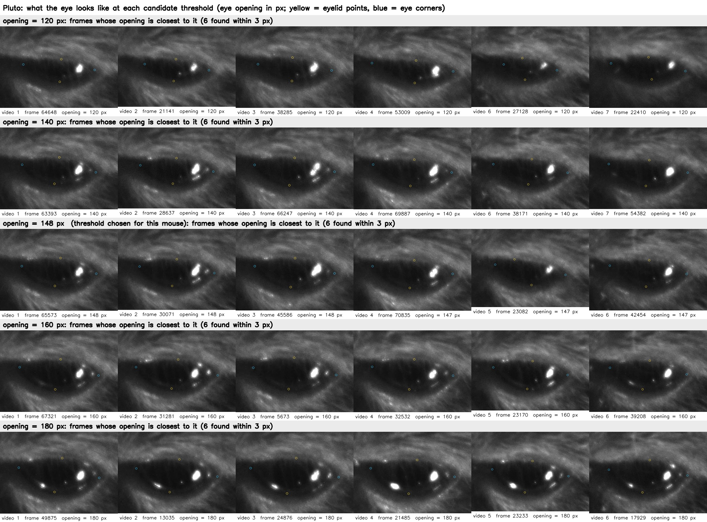

Task: DeepLabCut finds 8 points on every frame of a mouse-eye video: pupil top, bottom, left, right; upper and lower eyelid; nasal and temporal eye corner. From these we get pupil size, eye opening and blinks, to be aligned with brain recordings later.
Main question: On a new video, how many frames must a person label before the model is good enough?
The work has two phases, separated by the day the keypoint definitions were made explicit (2026-09-20). Phase 1 used the earlier definitions; only three choices that do not depend on the definitions are kept from it: batch size, model and error-correction algorithm. All other conclusions come from phase 2, which starts again from the same 5-minute video under the explicit definitions. Error numbers of the two phases cannot be compared directly.
Conclusions of phase 1 (steps 1–3)
Premise: pupil top is placed at the highest point of the visible pupil, the part not hidden by the eyelid.
Which batch size? 2, chosen by the internal validation loss; on the test set the four batch sizes differ little (step 1).
Which model? ResNet-50 (step 2).
Which error-correction algorithm picks the frames to label next? jump. The three algorithms show no clear gap; jump is slightly ahead (step 3).
The logic in between: why ResNet-50 and batch 2 were kept after the standard changed
On 2026-09-20 the placement of each of the 8 points was made explicit (point-by-point comparison in step 4). Three things changed: pupil top moved from "the highest point of the visible pupil" to "the true top of the pupil ellipse", about 50 px higher; pupil left and right moved from "the leftmost and rightmost visible points of the pupil" to the two ends of the horizontal axis of the ellipse; and the two corners moved from the inner side of the shadow and of the reflections to the outer side, 40–50 px outwards each. The definitions of pupil bottom and of the two eyelid points did not change. The images, the task and the training procedure did not change. The choice of batch size and model depends on the images and the training procedure, not on where the points are placed, so we consider both choices unaffected and keep ResNet-50 with batch 2. This is a judgment; batch size and model were not compared again under the explicit definitions. The three choices of phase 1 were themselves made under one set of definitions: all training and test frames of that video were labeled in the same way at the time (checked in step 4), so the comparisons between batch sizes, between models and between error-correction algorithms are fair.
Conclusions of phase 2 (steps 4–11)
Premise: the pupil is treated as an ellipse and pupil top is placed at the true top of that ellipse; where the eyelid hides it, the labeler estimates its position from the ellipse.
How many labels are enough within one video? It saturates within about 80 labels: the same 5-minute video, relabeled under the keypoint definitions made explicit on 2026-09-20 and redone, gives 12.9 / 13.0 / 12.0 / 13.1 / 12.3 px at 20 / 40 / 60 / 80 / 100 labels, with no decrease; and no later video has a plateau point above 80 labels (step 5). In phase 1 the same video showed no decrease from 80 to 300 labels either (step 3).
What about a new mouse? It needs its own labels, and 20 of them reach about 10 px. Second mouse (the model had seen one mouse): 208 px at 0 labels, 10.4 px at 20. Third mouse (the model had seen two mice): 26 px at 0 labels, 9.2 px at 20. The second time the mouse changed, the starting error without any labels was far smaller (step 5).
How many labels does each later video of the same mouse need? 0–40 reach the plateau; 1 of the 9 finished ones needed 80 (step 5).
20 labels already come close to saturation; could the first batch be cut to 5 or 10? They cannot replace 20: 5 labels are enough on only 5 of the 19 videos and 10 labels on 7, one cannot tell in advance which, and the result depends on which frames happen to be taken. What is compared is the size of the first batch (5 or 10 taken out of the 20 already labeled), not a procedure of 5 labels per step (step 6).
Do new videos make old ones worse? No (step 7).
Which points are accurate, and can the confidence be trusted? Pupil top is the least accurate (median error 10.2 px; the other 7 points 3.5–6.0 px); for every point a lower confidence goes with a larger error, but pupil top has 8.3 px even at high confidence (step 8).
How to compute the pupil area? Under the definitions made explicit on 2026-09-20 all four pupil points are ellipse endpoints, and on the 940 test frames of 19 videos the four-point area has a median error of 5.4% against 8.4% for the three-point rule; on videos 4 and 8 the area is still not accurate (step 9).
How to detect blinks? A definition was fixed first: not open = the eye is closed or the lid covers part of the pupil. So far the analysis is static, frame by frame. Criterion: one pixel threshold per mouse, not open when the eyelid distance is below it, Pluto 147.5 px, Terra 150.5 px, chosen on 327 blind single frames and nearly equal for the two mice, 94% (Pluto) and 89% (Terra) accurate; the model's eyelid distance is within 2 px of the labels on 949 test frames. Main finding: in 9 videos (3, 4, 8–12, 15, 18) 21–79% of the frames are below the threshold — a half-covered eye is the resting state of those recordings; blinks are a subset; blink dynamics will be analysed systematically later (step 10). The comparison rule "eye opening ÷ eye width < 0.347" is 91% accurate on the 239 frames of videos 0–13 and 93% on the 88 frames of videos 14–18.
Each video has a set of human-labeled test frames that are never used for training or for any choice. For every test frame the model gives the coordinates of the 8 points, in pixels of the original video frame (928 × 736, no rescaling). Every predicted point enters the calculation, none is dropped for low confidence; points the person did not label (for example the pupil points of a closed-eye frame) are left out.
Error of one point: for point k of frame i, with prediction and human label , the error is the straight-line distance between the two:
Median frame RMSE (the main metric from step 3 on): first the root mean square of the point errors within each frame, where is the number of labeled points in that frame (at most 8); then the median of over all test frames.
RMSE over all keypoints (used in steps 1 and 2): one root mean square over the errors of all points of all test frames, where N is the total number of labeled points (100 frames × 8 points, at most 800). A few points that are far off pull it up, which is why the median frame RMSE was used later.
The other numbers: "90th percentile" is the 90th percentile of ; "test frames above 50 px" is the share of frames with > 50; "points with confidence ≥ 0.6" is the share of labeled points whose model confidence is at least 0.6.
Lower is better. For scale: under the present keypoint definitions the eye width (distance between the two corners, median of the human labels on each video's test frames) is 363–497 px, so 10 px is about 2–3% of the eye width and 50 px about 10–14%. The scoring scripts are in the repository: v1_old_pupil_top/batch-size-selection/scripts/evaluate_eye_test_set.py and the script of the same name under model-selection/scripts/ for steps 1 and 2, active-learning-jump-selection/scripts/round_train_pipeline.py for step 3, and v2_new_pupil_top_video_scaling/scripts/scale_step.py from step 5 on; every score is written to the csv tables of the results/ folders. The video, data, model and metric of every step are listed in the "Basic information" table at its start.
Training recipe (chosen in steps 1 and 2, used in both phases): ResNet-50, batch 2. Every model is trained anew from ImageNet-pretrained weights; it never continues from one of our earlier models.
1选 batch size：batch 2Batch size: batch 2
基本信息Basic information
视频Video
第一只老鼠的 5 分钟眼睛视频（60 帧/秒，共 18,000 帧）。前 4 分钟用于挑帧和训练，最后 1 分钟只用于测试。The 5-minute eye video of the first mouse (60 fps, 18,000 frames). The first 4 minutes are used for frame selection and training, the final minute for testing only.
标注标准Label standard
第一阶段（瞳孔上点标在看得见的瞳孔的最高处）。Phase 1 (pupil top at the highest point of the visible pupil).
训练数据Training data
前 4 分钟里人工标注的 100 帧：最初 20 帧按画面外观聚类（k-means）挑选，其余 80 帧按时间顺序补充。按时间先后排序，最早的 80 帧（0–33 秒）用于训练。100 hand-labeled frames from the first 4 minutes: the first 20 picked by clustering image appearance (k-means), the other 80 added in time order. Sorted by time, the earliest 80 (0–33 s) are the training set.
验证数据Validation data
同一批 100 帧里时间最晚的 20 帧（34–236 秒），与训练帧相隔 1.2 秒以上。用来选 batch size。The latest 20 of the same 100 frames (34–236 s), at least 1.2 s away from the training frames. Used to choose the batch size.
测试数据Test data
最后 1 分钟里按时间均匀取 100 帧，人工标注 8 个点。只用来报告成绩，不参与训练，也不参与任何选择。100 frames evenly spaced in time over the final minute, all 8 points labeled by hand. Used only to report the score, never for training or for any choice.
模型和配置Model and settings
HRNet-W32（当时使用的模型），从 ImageNet 预训练权重开始训练 100 轮，CPU；学习率在第 80、95 轮下降；每个 batch size 训练一次；取内部验证 mAP 最高的那次存档来打分。HRNet-W32 (the model in use at that time), trained for 100 epochs from ImageNet-pretrained weights on CPU; learning rate drops at epochs 80 and 95; one run per batch size; the snapshot with the best internal validation mAP is scored.
指标Metric
测试帧上全部关键点合在一起的 RMSE（像素），公式见页面开头“指标怎么算”的第 3 条（N 最多为 100 帧 × 8 点 = 800）。这一步和第 2 步当时用这个指标；图 1-2 同时给出中位帧 RMSE。RMSE over all keypoints of all test frames (pixels); the formula is item 3 of "How the metrics are computed" at the top (N is at most 100 frames × 8 points = 800). This step and step 2 used this metric at the time; Figure 1-2 also gives the median frame RMSE.
What was done:With the reviewed labels (first 80 frames train, last 20 validate), one run each at batch 2, 4, 8, 16 (100 epochs). The selection rule was fixed before looking at results: lowest internal validation loss. The final-minute test frames are report-only.
图 1-1 怎么看：右上：内部验证损失，batch 2 最低（星号）。左上：测试集误差，蓝线在 batch 2 也最低（21.07 px）。右下：把两者画在一起，batch 2 在左下角，两个信号一致。左下：置信度 ≥ 0.6 的点的比例，batch 越大越低。Figure 1-1, how to read:Top right: internal validation loss, lowest at batch 2 (star). Top left: test error, the blue line is also lowest at batch 2 (21.07 px). Bottom right: both together, batch 2 sits in the lower-left corner, so the two signals agree. Bottom left: share of points with confidence ≥ 0.6 falls as the batch grows.
图 1-2 怎么看：同样的四次训练，用两种指标打分（2026-10-04 补算，没有重新训练）。左：当时用的指标，全部关键点合在一起的 RMSE。中：后面各步用的指标，中位帧 RMSE，和左图用同一个纵轴刻度。右：帧 RMSE 超过 50 px 的测试帧所占比例。按中位帧 RMSE，四个 batch size 是 19.7 / 18.5 / 20.1 / 19.1 px，都在 18.5–20.1 px 之间，batch 4 最低。Figure 1-2, how to read:The same four runs scored with both metrics (added 2026-10-04, no retraining). Left: the metric used at the time, RMSE over all keypoints. Middle: the metric of the later steps, median frame RMSE, on the same y scale as the left panel. Right: share of test frames with frame RMSE above 50 px. By median frame RMSE the four batch sizes give 19.7 / 18.5 / 20.1 / 19.1 px, all between 18.5 and 20.1 px, with batch 4 the lowest.
Conclusion:Batch 2. The internal validation set and the independent test set pick the same batch, which shows the enlarged validation set can be trusted. One run per batch; the differences between batches are small (21.1–23.6 px). Re-scored with the metric of the later steps (median frame RMSE): the four batches lie between 18.5 and 20.1 px, batch 4 is the lowest (18.5 px) and batch 2 gives 19.7 px, 1.3 px apart; batch 4 and batch 8 each have 1–2 frames above 50 px, batch 2 has none. The selection rule is the internal validation loss and does not look at the test set, so the choice of batch 2 stands; but by median frame RMSE the test set does not show batch 2 as the best, and the four batches cannot really be told apart.
2选模型：ResNet-50Backbone: ResNet-50
基本信息Basic information
视频Video
第一只老鼠的 5 分钟眼睛视频（60 帧/秒，共 18,000 帧）。前 4 分钟用于挑帧和训练，最后 1 分钟只用于测试。The 5-minute eye video of the first mouse (60 fps, 18,000 frames). The first 4 minutes are used for frame selection and training, the final minute for testing only.
标注标准Label standard
第一阶段（瞳孔上点标在看得见的瞳孔的最高处）。Phase 1 (pupil top at the highest point of the visible pupil).
训练数据Training data
与第 1 步相同：最早的 80 帧训练。Same as step 1: the earliest 80 frames.
验证数据Validation data
与第 1 步相同：最晚的 20 帧。用来选模型。Same as step 1: the latest 20 frames. Used to choose the model.
测试数据Test data
最后 1 分钟里按时间均匀取 100 帧，人工标注 8 个点。只用来报告成绩，不参与训练，也不参与任何选择。100 frames evenly spaced in time over the final minute, all 8 points labeled by hand. Used only to report the score, never for training or for any choice.
模型和配置Model and settings
5 种模型（ResNet-50、HRNet-W18、HRNet-W32、HRNet-W48、CSPNeXt-S），batch 2，各训练 100 轮，CPU，其余设置与第 1 步相同，每种训练一次。Five models (ResNet-50, HRNet-W18, HRNet-W32, HRNet-W48, CSPNeXt-S), batch 2, 100 epochs each on CPU, other settings as in step 1, one run each.
指标Metric
与第 1 步相同：当时用全部关键点合在一起的 RMSE；图 2-2 同时给出中位帧 RMSE。Same as step 1: RMSE over all keypoints at the time; Figure 2-2 also gives the median frame RMSE.
What was done:Same data and settings (batch 2, 100 epochs), five backbones: ResNet-50, HRNet-W18 / W32 / W48, CSPNeXt-S.
图 2-1 怎么看：左上：测试集误差，ResNet-50 最低（20.1 px），HRNet-W32 接近（21.1 px）。右上：内部验证损失，5 个模型只差 1.4%，分不出高下。左下：置信度 ≥ 0.6 的点，ResNet-50 最多（800 个点里 514 个）。右下：训练时间对误差，ResNet-50 用时 1.7 小时，在左下角（误差低，用时短；只有误差高得多的 CSPNeXt-S 比它快）。Figure 2-1, how to read:Top left: test error, ResNet-50 lowest (20.1 px), HRNet-W32 close (21.1 px). Top right: internal validation loss, the five models differ by only 1.4% and cannot be separated. Bottom left: points with confidence ≥ 0.6, ResNet-50 has the most (514 of 800). Bottom right: training time vs error, ResNet-50 takes 1.7 h and sits in the lower-left corner (low error, short time; only CSPNeXt-S, with a much higher error, is faster).
图 2-2 怎么看：同样的五个模型，用两种指标打分（2026-10-04 补算，没有重新训练）。左：全部关键点合在一起的 RMSE，从 20.1 到 47.9 px，差别很大。中：中位帧 RMSE，同一个纵轴刻度，五个模型是 18.4 / 19.7 / 19.2 / 19.6 / 20.5 px，只差约 2 px。右：帧 RMSE 超过 50 px 的测试帧比例，HRNet-W18 有 15%，CSPNeXt-S 有 2%，ResNet-50 和 HRNet-W32 是 0。左图的差别主要来自右图里这些错得很远的帧。Figure 2-2, how to read:The same five models scored with both metrics (added 2026-10-04, no retraining). Left: RMSE over all keypoints, from 20.1 to 47.9 px, a large spread. Middle: median frame RMSE on the same y scale; the five models give 18.4 / 19.7 / 19.2 / 19.6 / 20.5 px, only about 2 px apart. Right: share of test frames with frame RMSE above 50 px: 15% for HRNet-W18, 2% for CSPNeXt-S, none for ResNet-50 and HRNet-W32. The spread in the left panel comes mainly from these far-off frames.
Conclusion:Taking everything together, ResNet-50. (1) Lowest test error: 20.1 px. (2) The validation losses of the five models are close, within 1.4%. (3) Best use of confidence: 514 of 800 points have confidence ≥ 0.6, against 75–375 for the other models; this helps when confidence is used later to detect blinks and tracking loss. (4) Low training cost: 1.7 h, against 3.7 h for HRNet-W32, the model with a similar error. All later experiments use ResNet-50 with batch 2. Re-scored with the median frame RMSE, ResNet-50 is still the lowest (18.4 px), but the five models are only about 2 px apart. The comparison of the two metrics shows that the RMSE over all keypoints is easily pulled up by a few far-off frames (the 47.9 px of HRNet-W18 come mainly from 15% of the frames); it reflects whether there are gross failures, not the error of a typical frame. This is why the median frame RMSE is the main metric from step 3 on, with the share of frames above 50 px reported separately.
第一只老鼠的 5 分钟眼睛视频（60 帧/秒，共 18,000 帧）。前 4 分钟用于挑帧和训练，最后 1 分钟只用于测试。The 5-minute eye video of the first mouse (60 fps, 18,000 frames). The first 4 minutes are used for frame selection and training, the final minute for testing only.
标注标准Label standard
第一阶段。Phase 1.
训练数据Training data
起点是第 1 步的 80 帧。每一轮：模型预测前 4 分钟的全部 14,400 帧，由找帧算法标出可疑帧，再按画面外观聚类从中挑 20 帧，人工改正全部 8 个点后加入训练集。三种算法各自独立累加，11 轮后每条线 300 帧。Starts from the 80 frames of step 1. Each round the model predicts all 14,400 frames of the first 4 minutes, the detector flags suspicious frames, 20 of them are picked by clustering image appearance, all 8 points are corrected by hand and the frames are added to the training set. The three detectors accumulate independently; after 11 rounds each branch has 300 frames.
验证数据Validation data
第 1 步的 20 帧，始终不变。The 20 frames of step 1, never changed.
测试数据Test data
最后 1 分钟里按时间均匀取 100 帧，人工标注 8 个点。只用来报告成绩，不参与训练，也不参与任何选择。100 frames evenly spaced in time over the final minute, all 8 points labeled by hand. Used only to report the score, never for training or for any choice.
模型和配置Model and settings
ResNet-50，batch 2，100 轮，学习率在第 80、95 轮下降，Apple 芯片 GPU（MPS）训练。每一轮都从 ImageNet 预训练权重重新训练。图中每个点是内部验证 mAP 最高的存档，只训练一次。ResNet-50, batch 2, 100 epochs, learning rate drops at epochs 80 and 95, trained on the Apple GPU (MPS). Every round is trained anew from ImageNet-pretrained weights. Each point in the figure is the snapshot with the best internal validation mAP, from a single run.
指标Metric
中位帧 RMSE：对每一帧算 8 个点的 RMSE，再取 100 帧的中位数。Median frame RMSE: the RMSE over the 8 points of each frame, then the median over the 100 frames.
What was done:The aim is to choose an error-correction algorithm: once a model is trained, an algorithm searches the video for frames where the model is probably wrong, a person corrects only those frames, and the model is retrained. This procedure is called active learning. Three algorithms were compared to see whose picks reduce the error most. Procedure: starting from 80 labels, each round the algorithm picks frames, a person corrects 20 of them, they are added and the model is retrained. Three detectors ran as three branches, all built into DeepLabCut (extract_outlier_frames) and all working on the model's prediction of every frame of the video: uncertain, frames in which any of the 8 points has confidence below 0.6; jump, frames in which any point moved more than 20 px from the previous frame; fitting, frames in which the 8 points deviate on average by more than 20 px from a time-series model (ARIMA, fitted on the confident frames only) of each point's trajectory. The flagged frames are then clustered into 20 groups by image appearance and one frame per group is given to the labeler. 11 rounds, each branch from 80 to 300 labels.
图 3-1 怎么看：横轴是累计训练帧数，三种颜色是三种算法。图中每一轮都用同一个公式计算。中间一幅是主要指标（中位帧 RMSE）：三条线一直在 15.7–17.5 px 之间上下波动，没有下降趋势；红线（jump）多数时候略低；注意这幅图的纵轴只跨 2 px。左边一幅是均值，会被几帧严重错误拉高（蓝线在 120–140 帧的尖峰就是几帧眨眼造成的）。Figure 3-1, how to read:x = cumulative training frames, the three colours are the three detectors. Every round in the figure is scored with the same formula. The middle panel is the primary metric (median frame RMSE): all three lines wander between 15.7 and 17.5 px with no downward trend; the red line (jump) is slightly lower most of the time; note that its y axis spans only 2 px. The left panel is the mean, which a few badly wrong frames pull up (the blue spike at 120–140 frames comes from a few blink frames).
Conclusion:This step has two conclusions: jump is chosen as the error-correction algorithm, and on this video about 80 labels saturate.
jump is the error-correction algorithm and picks the frames in all later experiments. In this experiment jump has the lowest error: the mean of the median error over the 11 rounds is 16.4 px for jump, 17.0 px for uncertain and 17.0 px for fitting, and jump is the lowest in 8 of the 11 rounds. The lead is about 0.6 px, smaller than the variation when one setting is trained again (0.3–2 px), so we regard the three error-correction algorithms as close, with jump slightly ahead.
On the jump threshold: this step used a fixed 20 px. From 2026-09-18 on (the main line of step 5) the threshold is 3% of the video's median eye width; the algorithm is unchanged. Reason: in the 5-minute video of this step the eye is about 700 px wide, so 20 px is about 3% of the eye width; in the later videos the eye is only 360–500 px wide and a fixed 20 px would be 4–6% of it, a stricter criterion, so it was made relative to give every video the same standard (about 11–15 px on the later videos). The change is recorded in v1_old_pupil_top/new-video-generalization/FROZEN_PARAMETERS.md.
On this video about 80 labels saturate. From 80 to 300 labels the median error of all three branches stays between 15.7 and 17.5 px, with no decrease.
This result uses the keypoint definitions from before 2026-09-20.
After the definitions were made explicit on 2026-09-20, the same video was relabeled and the experiment repeated, with the same conclusion: the error stays between 12 and 13 px at 20, 40, 60, 80 and 100 labels and does not fall with the number of labels (step 5, video 0). What was made explicit is described in step 4; mainly, pupil top moved from "the highest point of the visible pupil" to "the true top of the pupil ellipse", and the two corners became the crossing of the continued eyelid margins.
The error values under the two sets of definitions cannot be compared directly; what agrees is that the video saturates within about 80 labels.
4点位定义的明确（2026 年 9 月 20 日起）：瞳孔按椭圆标，眼角取睑缘延长线的交点Keypoint definitions made explicit (from 2026-09-20): pupil as an ellipse, corners at the crossing of the eyelid margins
What was done:Where each of the 8 points is placed was written down, and all earlier videos were relabeled accordingly. From this step on every model and number uses these definitions. The full definitions, example figures and the common mistakes are in the folder keypoint_definitions/ of the repository. The points are described one group at a time below, each followed by its figure.
图 4-1怎么看：三只老鼠各一帧人工标注。红点是瞳孔的四个点，红线是过这四个点的椭圆；青色点是上下眼睑和两个眼角。图像为了看清做了提亮。 来源：左，第一只老鼠，视频 0（0_first5minvedio），第 15001 帧；中，Pluto，视频 1（1_20251031_Pluto_spont_1），第 68086 帧；右，Terra，视频 11（11_20251017_Terra_spont_1），第 68086 帧。都取自各视频的测试集，点是人工标注。Fig. 4-1.How to read:One human-labeled frame of each of the three mice. Red dots are the four pupil points and the red line is the ellipse through them; cyan dots are the two eyelid points and the two corners. The frames are brightened for display. Source: left, first mouse, video 0 (0_first5minvedio), frame 15001; middle, Pluto, video 1 (1_20251031_Pluto_spont_1), frame 68086; right, Terra, video 11 (11_20251017_Terra_spont_1), frame 68086. All from the test set of the video; the points are human labels.
Pupil top, bottom, left, right (Fig. 4-2): the pupil is treated as an ellipse and the four points are the ends of its two axes. Parts hidden by the upper eyelid or by fur are completed with the ellipse, so the pupil-top point often lies above the upper-eyelid point, that is, at a position covered by the lid. In Fig. 4-2 the red dots are the present positions; the yellow crosses are the positions before 2026-09-20: at the topmost, bottommost, leftmost and rightmost visible points of the pupil, without fitting an ellipse. The pupil boundary is the outer edge of the darkened region; where the edge looks doubled the left contour is used (2026-09-26); the brighter band around the dark core counts as pupil (2026-09-29).
图 4-2怎么看：瞳孔四个点怎么来。红色椭圆盖住整个瞳孔，红色虚线是它的两条轴，四个点是轴的端点。黄色叉和黄色虚线是 2026 年 9 月 20 日之前的标法：当时没有刻意按椭圆去拟合，四个点标在看得见的瞳孔最靠上、最靠下、最靠左、最靠右的位置，所以四个点不一定是椭圆的端点，也不一定落在椭圆的两条轴线上。 来源：三幅都是 Pluto，视频 1（1_20251031_Pluto_spont_1），从左到右是第 20855、5160、4835 帧，取自第一批训练帧。红点是按 2026 年 9 月 20 日明确的定义重新标注的位置，黄色叉是同一帧在此之前的标注。Fig. 4-2.How to read:How the four pupil points are obtained. The red ellipse covers the whole pupil, the dashed red lines are its two axes, and the four points are the ends of the axes. Yellow crosses and the dashed yellow outline show the placement before 2026-09-20: no ellipse was fitted on purpose and the four points were placed at the topmost, bottommost, leftmost and rightmost visible points of the pupil, so they are not necessarily the ends of an ellipse and do not necessarily lie on its two axes. Source: all three panels are Pluto, video 1 (1_20251031_Pluto_spont_1), frames 20855, 5160 and 4835 from left to right, taken from the first training batch. Red dots are the labels made under the definitions of 2026-09-20, yellow crosses the labels of the same frames before that.
Upper and lower eyelid (Fig. 4-1 above): the line between the eyelid skin and the eyeball is the eyelid margin. The upper-eyelid point is the midpoint of the upper margin, the lower-eyelid point the midpoint of the lower margin.
Left corner (nasal, medial canthus; Fig. 4-3, second row): there is a shadow at this corner; it gets narrower downwards and continues to near the lower eyelid. The outer border of the shadow is taken as the lower-left margin (solid red); it and the upper margin are each continued (dashed red), and the crossing of the two continuations (red circle) is the left corner; the cyan dot is the labeled position. Not used (dotted yellow line and yellow cross): following the inner border of the shadow, which puts the crossing inside the shadow. The hatched area is the shadow between the two constructions.
Right corner (temporal, lateral canthus; Fig. 4-3, third row): there are several bright reflections on this side, with a stretch of shadow below them. The lower margin is continued upwards along the outer line (dashed red), around the right of the reflections, and the point where it meets the upper margin (red circle) is the right corner; the cyan dot is the labeled position. Why the outer side: in the discussion with Kaiwen on 2026-09-20 we concluded that fur does not reflect, so the bright reflections on the right are still inside the eye and the corner must lie outside them. Not used (dotted yellow line and yellow cross): following the inner edge of the reflection and of the shadow below it, which puts the crossing on the inner line next to the reflection. The corner is not placed on a reflection either.
图 4-3怎么看：两个眼角怎么来，画法照 2026 年 9 月 20 日讨论时的手绘图。三行分别是整只眼睛、左眼角、右眼角；每一行左边是没有任何线的原图，右边是同一张图加上作图线。红色实线是沿图像描出的睑缘，红色虚线是它的延长线，红圈是交点，也就是眼角，青色点是标注的位置。黄色点线和黄色叉是讨论时比较过、最后不取的画法：左眼角沿阴影内侧的边，右眼角沿反光内沿和它下面阴影的内边缘，两条黄线都一直画到接近下眼睑点。斜线区域是左眼角处的阴影。 来源：三行都是第一只老鼠，视频 0（0_first5minvedio），第 15001 帧，取自测试集。青色点是人工标注；红线、黄线是对着图像画的作图线。Fig. 4-3.How to read:How the two corners are obtained, drawn after the hand sketch used in the discussion of 2026-09-20. The three rows are the whole eye, the left corner and the right corner; in each row the left image is the frame without any line and the right image is the same frame with the construction. Solid red = eyelid margin traced on the image, dashed red = its continuation, red circle = the crossing, which is the corner, cyan = the labeled point. Dotted yellow lines and yellow crosses show the construction that was compared in the discussion and not adopted: along the inner border of the shadow at the left corner, and along the inner edge of the reflection and of the shadow below it at the right corner; both yellow lines run down to near the lower-eyelid point. The hatched area is the shadow at the left corner. Source: all three rows are the first mouse, video 0 (0_first5minvedio), frame 15001, from the test set. Cyan dots are human labels; the red and yellow lines are construction lines drawn on the image.
看不清的点：所有 8 个点都一样，看得清楚就标；不能准确判断位置时，这个点留空不标。
Points that cannot be seen: the same for all 8 points: a point is labeled when it can be seen clearly and left empty when its position cannot be judged accurately.
之前的定义和现在的定义，逐点对照Earlier and present definitions, point by point
Where the numbers come from: all are comparisons between human labels; no model is involved. Two comparisons are used.
Position (column "median coordinates"): two sets of human-labeled test frames from the final minute of the same video (the 5-minute video of the first mouse): 100 frames labeled before 2026-09-20 and the present 50 frames. Camera and eye position did not change, so the median coordinates of a point over each set show where that point was placed. Coordinates are pixels of the original frame, x to the right, y downwards.
Shift on the same frame (last column): where a frame has two versions of labels, the distance between the two is taken and then the median over the frames. The four pupil points use 40 frames of the Pluto 2025-10-31 video (earlier labels vs the labels redone as an ellipse). The corners and eyelids use 90 frames of the 5-minute video of the first mouse (test set 50, validation set 20, first batch 20), with the two versions of labels: corners on the inner side and on the outer side.
点point
2026 年 9 月 20 日之前的定义definition before 2026-09-20
现在的定义present definition
中位坐标：之前 → 现在median coordinates: before → now
同一帧上的位移中位数median shift on the same frame
瞳孔上点pupil top
看得见的瞳孔的最高处，停在眼睑边上；在上眼睑点下方约 25 pxhighest point of the visible pupil, stopping at the eyelid; about 25 px below the upper-eyelid point
瞳孔椭圆的顶端，被挡住时按椭圆估计；在上眼睑点上方约 11 pxtop of the pupil ellipse, estimated from the ellipse where hidden; about 11 px above the upper-eyelid point
y 368 → 319（上移 49 px） (49 px up)
52 px
瞳孔左点、右点pupil left, right
看得见的瞳孔最靠左、最靠右的位置，没有按椭圆拟合；左点比右点高约 37 pxleftmost and rightmost visible points of the pupil, no ellipse fitted; left about 37 px higher than right
椭圆横轴的两个端点；左右两点等高（相差 0 px）the two ends of the horizontal axis of the ellipse; left and right at the same height (0 px apart)
左left y 425 → 447，右, right y 462 → 448
约 14 pxabout 14 px
瞳孔下点pupil bottom
看得见的瞳孔的最低处lowest point of the visible pupil
椭圆的底端（下缘一般看得见，位置基本不变）bottom of the ellipse (the lower edge is usually visible, so the position hardly changes)
y 585 → 586
约 14 pxabout 14 px
左眼角left (nasal) corner
阴影的内侧inner side of the shadow
阴影的外侧：两条睑缘延长线的交点。原因：讨论后认为这片阴影是毛发遮挡造成的，眼角在阴影外侧更合理outer side of the shadow: crossing of the two continued eyelid margins. Reason: after the discussion the shadow was attributed to fur covering the eye, so the corner is more plausibly on its outer side
x 410 → 370（外移 40 px） (40 px outwards)
40 px
右眼角right (temporal) corner
反光区域的内侧inner side of the reflections
反光区域的外侧：下睑缘沿外层线向上延伸与上睑缘的交点。原因：皮毛不会反光，反光亮带仍在眼睛内部outer side of the reflections: where the lower margin, continued upwards along the outer line, meets the upper margin. Reason: fur does not reflect, so the reflections are still inside the eye
x 808 → 857（外移 49 px） (49 px outwards)
56 px
上眼睑点upper eyelid
上睑缘弧线的中点midpoint of the upper eyelid margin
定义不变；眼角外移后位置略向上same definition; slightly higher after the corners moved
Were the earlier definitions applied consistently: yes. All human labels made on this video before 2026-09-20 follow one placement; the check per label set is below (keypoint_definitions/results/definition_by_label_set.csv, script scripts/definition_check.py):
标注集label set
帧数frames
左眼角 xleft corner x
右眼角 xright corner x
瞳孔上点在上眼睑点上方 (px)pupil top above upper-eyelid point (px)
瞳孔左点比右点高 (px)pupil left higher than right (px)
之前：训练帧（第 1、2 步用）before: training frames (steps 1, 2)
每个数是该标注集里所有帧的中位数。负数表示瞳孔上点在上眼睑点的下方。之前的五组标注彼此一致（左眼角 x 404–419，右眼角 x 795–808，瞳孔上点在上眼睑点下方 25–27 px），和现在的标法明显不同。
Each number is the median over the frames of the label set. A negative value means pupil top lies below the upper-eyelid point. The five earlier label sets agree with one another (left corner x 404–419, right corner x 795–808, pupil top 25–27 px below the upper-eyelid point) and differ clearly from the present placement.
Conclusion:The largest changes are pupil top and the two corners: the top point moved from the highest visible point to the top of the ellipse, and the corners from the inner to the outer side. Pupil left and right became the ends of the horizontal axis of the ellipse; pupil bottom and the two eyelid points keep their definitions. The earlier definitions were used consistently in steps 1–3, the present ones are used consistently from step 5 on. The four eyelid and corner points only serve to detect blinks, so a stable position that can be found in every frame is preferred. Model and batch size are carried over from steps 1 and 2 (ResNet-50, batch 2): where the points are placed changed, the images and the training procedure did not, so they were not compared again. Error numbers of steps 1–3 cannot be compared directly with those from step 5 on.
5主线：每个新视频要标多少帧Main line: labels needed per new video
基本信息Basic information
视频Video
视频 0：第一只老鼠的 5 分钟视频。视频 1–10：Pluto 的 19.9 分钟视频，其中视频 1、2、3 是同一天（2025-10-31）的三段，视频 4–10 每个录制日一段。视频 11 起：Terra 的 19.9 分钟视频，每个录制日一段。都是 60 帧/秒。Video 0: the 5-minute video of the first mouse. Videos 1–10: 19.9-minute videos of Pluto; videos 1, 2, 3 are three recordings of the same day (2025-10-31), videos 4–10 one per recording day. From video 11: 19.9-minute videos of Terra, one per recording day. All at 60 fps.
标注标准Label standard
第二阶段（第 4 步的定义）。Phase 2 (the definitions of step 4).
训练数据Training data
之前各视频带入的标注（见下表）加上这个视频自己的标注。自己的标注从视频前 80% 里挑：第一批 20 帧按画面外观聚类，之后每批 20 帧从跳动大的帧里聚类；每批先由模型预标，人再逐帧改正。The labels carried from earlier videos (table below) plus this video's own labels. Its own labels are picked from the first 80% of the video: the first 20 by clustering image appearance, each later batch of 20 by clustering among the frames with large jumps; the model pre-labels each batch and a person corrects every frame.
验证数据Validation data
视频第 80%–90% 的部分里取 20 帧，与前后各隔 2 秒。20 frames from the part between 80% and 90% of the video, with 2-second guards on both sides.
测试数据Test data
视频最后 10% 里按时间均匀取 50 帧，人工标注后冻结。只用来报告成绩。50 frames evenly spaced in time over the final 10% of the video, labeled by hand and frozen. Used only to report the score.
模型和配置Model and settings
ResNet-50，batch 2，120 轮，学习率在第 96、114 轮下降，MPS 训练，CPU 打分。每一步都从 ImageNet 预训练权重重新训练，只训练一次。成绩取最后一轮（第 120 轮）的存档。ResNet-50, batch 2, 120 epochs, learning rate drops at epochs 96 and 114, trained on MPS, scored on CPU. Every step is trained anew from ImageNet-pretrained weights, a single run. The final snapshot (epoch 120) is scored.
指标Metric
该视频 50 帧测试帧上的中位帧 RMSE（8 个点）。Median frame RMSE (8 points) on the 50 test frames of that video.
What was done:Videos are added one at a time, in this order.
Video 0: the 5-minute video of the first mouse.
Videos 1, 2, 3: the second mouse, Pluto; three recordings of the same day (2025-10-31), 19.9 minutes each.
Videos 4–10: Pluto, one recording per recording day, from the most recent backwards: 10-30, 10-29, 10-28, 10-27, 10-24, 10-23, 10-22 (there is no video of 10-26 or 10-25 in our set).
From video 11: the third mouse, Terra, one recording per recording day, from the most recent backwards: video 11 is 2025-10-17, video 12 is 10-16, then 10-15, 10-14, 10-13, 10-10, 10-09, 10-08 (videos 13–18).
Every video follows the same steps:
50 frames evenly spaced over the final 10% of the video become the test set; they are labeled and frozen.
The previous model is applied unchanged to get the "0 labels" error.
Each step adds 20 labels of this video (picked by the algorithm of section 5.1 and Figure 5-1 below; the model pre-labels each batch and a person corrects every frame), retrains together with the labels carried from earlier videos, and scores on the test set.
Plateau rule: stop when two consecutive steps each fail to improve the best error by more than 3%. The plateau point is the last step that did improve it. When the rule fires, a person confirms whether the video is finished. All 19 videos stopped when the rule fired, so all of them meet the definition of the plateau; for 18 of them the plateau point is the step the rule gives, and only for video 5 was the plateau point given further consideration. On video 5 the median error at 20 labels (15.85 px) and at 40 labels (16.58 px) is no better than at 0 labels (11.90 px), so the rule fired at 40; this meets the definition of the plateau, and by the rule the plateau point is 0 labels. But we took into account that the 0-label model is off by more than 50 px on 6 of the 50 test frames (12%), which are gross errors; with 20 labels there are 0 such frames, so all gross errors are removed; with 40 labels there are still 0, so the effect holds and nothing further is gained. The plateau point is therefore taken as 20 labels, and these 20 labels are what later videos carry.
The next video starts, carrying only this video's labels up to the plateau point (not every frame labeled on this video goes into the training of later videos: frames labeled after the plateau point are left out). This mirrors real use, where labeling stops at the plateau.
5.1 每一批 20 帧是怎么挑出来的（算法）5.1 How each batch of 20 frames is picked (algorithm)
Script: v2_new_pupil_top_video_scaling/scripts/select_frames.py. All numbers below are fixed parameters of the script; following them gives the same frames.
(a) The video is first split into three segments
Test segment: the final 10% of the video (at least 60 s). 50 frames evenly spaced in time are the test frames.
Validation segment: the 10% before it (at least 60 s). 20 evenly spaced frames are the validation frames.
Pool: all frames before the validation segment (about the first 80%; 57158 frames for a 19.9-min video). Training frames are picked from the pool only. 2 s are removed on both sides of the validation segment so that the three segments share no near-identical neighbouring frames.
(b) Batch 1: clustering by image appearance (no model)
Every 5th frame of the pool is taken.
An "appearance fingerprint" is computed for each frame: greyscale, downscaled to 128 × 96; a Gaussian blur with sigma 1 px minus a Gaussian blur with sigma 6 px (keeps edges and shape, removes slow lighting changes); downscaled to 32 × 24 and flattened to 768 numbers; mean subtracted and divided by the standard deviation.
k-means on the fingerprints with 20 clusters (scikit-learn KMeans, n_clusters=20, n_init=10, max_iter=300, random_state=42).
From each cluster the frame closest to the cluster centre (Euclidean distance) is taken, 20 frames in total, starting with the largest cluster.
Spacing: picked frames must be at least 1 s apart from each other and from every frame labeled earlier; frames that violate this are skipped. If fewer than 20 remain, the number of clusters is raised to 30, 40, … (at most 80) and the new centre frames fill the batch.
(c) From batch 2 on: candidates by the jump rule, then clustering by appearance
The model of the previous step predicts every frame of the whole video.
Threshold: eye width = distance from the nasal to the temporal corner in each frame, median over the video; threshold = 3% of the median eye width (about 11–15 px).
Jump: for each frame, the distance each of the 8 points moved from the previous frame; the largest of the 8.
Pool frames whose jump exceeds the threshold are the candidates (the frames flagged by the jump rule). More than 12000 candidates are thinned evenly to about 12000; with fewer than 40, the 2000 frames with the largest jumps are used instead.
The candidates go through exactly the steps of batch 1: fingerprints, k-means with 20 clusters, the frame closest to each centre, at least 1 s apart, more clusters if short.
If there are still fewer than 20 (this happens when the model is already good and the few candidates are bunched within a few seconds), the batch is filled from the candidates in order of decreasing jump, still 1 s apart.
Every batch is therefore "one frame per cluster": the jump rule decides where to look (frames on which the model is unstable), and the clustering makes sure the 20 picked frames look different from each other instead of being 20 nearly identical frames.
{{SELECTION_STRIP}}
图 5-1 怎么看：每个视频各一张选帧图（它的第 2 批，也就是第一次由 jump 规则挑的那一批），排成一行，可以左右拖动；每张图下面注明视频。每张图从上到下：（1）左上的散点图：每个点是一帧候选帧，位置是外观指纹降到二维后的坐标，颜色是它所属的类，黑色星号是挑中的 20 帧。右上的横条：每一类有多少帧。（2）第二行：每一类的帧出现在视频的什么时间，星号是挑中的帧。（3）下面几行是模型预测出的曲线，横轴是时间，细竖线是挑中的 20 帧：瞳孔中心的横坐标和纵坐标、眼睛睁开高度、瞳孔面积、瞳孔点最低置信度。（4）最下面一行：每一帧的最大跳动，红色虚线是阈值，超过阈值的帧是候选帧。要看的是：星号分布在散点图的各个区域，每一类里都有一帧，说明挑出的 20 帧覆盖了候选帧里各种不同的画面形态，没有集中在某一种；竖线也分散在整段时间里，没有挤在同一个时刻。每个视频每一批的图都在页面最后的附录里。Figure 5-1, how to read:One selection sheet per video (its batch 2, the first batch picked by the jump rule) in one row; scroll sideways; the video is named under each sheet. Each sheet, from top to bottom: (1) scatter plot at the top left: one dot per candidate frame, placed by the first two principal components of its fingerprint and coloured by cluster; black stars are the 20 picked frames. Bars at the top right: frames per cluster. (2) Second row: when the frames of each cluster occur in the video; stars are the picks. (3) The next rows are traces predicted by the model against time, with a thin vertical line at each of the 20 picks: pupil centre x and y, eye opening, pupil area, lowest pupil confidence. (4) Bottom row: the largest jump in each frame; the red dashed line is the threshold and frames above it are candidates. What to see: the stars are spread over all regions of the scatter plot with one frame in every cluster, so the 20 picks cover the different appearances among the candidates instead of concentrating on one; the vertical lines are also spread over the whole duration instead of bunching at one moment. The sheets of every batch of every video are in the appendix at the end of the page.
图 5-2 怎么看：左图：每个视频到平台时用了多少帧自己的标注。视频 0 用了 60 帧，视频 1（新老鼠的第一个视频）20 帧，之后大多是 20 帧，视频 7 是 0 帧，视频 9 是 80 帧。右图：灰色虚线是 0 帧时的误差（上一个模型直接用），红线是到平台时的误差。两条线之间的距离就是这个视频自己的标注带来的改善。视频 1 的 0 帧误差是 208 px（超出图的范围），因为换了老鼠。Figure 5-2, how to read:Left: how many of its own labels each video used at its plateau. Video 0 used 60, video 1 (first video of the new mouse) 20, most later videos 20, video 7 none, video 9 80. Right: the grey dashed line is the error at 0 labels (previous model unchanged), the red line the error at the plateau. The gap between them is what the video's own labels bought. Video 1 starts at 208 px (off scale) because the mouse changed.
{{SCALE_STRIP}}
图 5-3 怎么看：每个视频自己的曲线排成一行，从视频 0 到最新的视频，可以左右拖动；每张图下面注明视频、老鼠、日期和平台点。三幅小图的读法以视频 9 为例。左图：横轴是这个视频自己的标注帧数，纵轴是误差；20 帧 10.4 px，40 帧 8.6 px，80 帧 8.2 px，之后两步（9.4、8.6 px）都没有再改善，规则在 120 帧触发，平台点记为 80 帧。中图：8 个点各自的误差，瞳孔下点（蓝）最难。右图：不需要标注的指标，紫线是整段视频里被跳动规则标出的帧的比例，随标注增加从 18% 降到 9%。Figure 5-3, how to read:The curves of every video in one row, from video 0 to the newest; scroll sideways. Under each figure: video, mouse, date and plateau point. How to read the three panels, with video 9 as the example. Left: x = this video's own labels, y = error; 10.4 px at 20 labels, 8.6 px at 40, 8.2 px at 80, then two steps without a gain (9.4, 8.6 px), so the rule fired at 120 and the plateau point is 80. Middle: error of each of the 8 points; pupil bottom (blue) is the hardest. Right: label-free signals; the purple line is the share of video frames flagged by the jump rule, falling from 18% to 9% as labels are added.
图 5-4 怎么看：所有视频合在一张图里，突出主线（图很宽，可以左右拖动）。从左到右每个色块是一个视频，按训练先后排列，色块上方注明视频、日期和带入的标注数。色块内横轴是这个视频自己的标注帧数，纵轴是误差（对数刻度）。粗的彩色线是这个视频自己的测试集：空心圆是 0 帧（上一个模型直接用），之后每 20 帧一个点。要看的是：多数视频从 0 帧到 20 帧一步就降到接近平台的位置，之后基本持平。灰线是其他视频的测试集，右端注明是哪个视频。Figure 5-4, how to read:All videos in one figure, with the main line emphasized (wide; scroll sideways). From left to right each tinted block is one video, in training order; above it: video, date and carried labels. Inside a block x = that video's own labels and y = error (log scale). The bold coloured line is that video's own test set: the open circle is 0 labels (the previous model applied unchanged), then one point every 20 labels. What to see: most videos drop close to their plateau in the single step from 0 to 20 labels and stay flat afterwards. Grey lines are the test sets of the other videos, named at the right end.
每个视频的完整数字（由结果表自动生成）：
The full numbers of every video (generated from the result tables):
Videos 0–3 carry all labels that existed when the next video started (320 in total), more than their plateau points (120 in total). From video 4 on only the labels up to the plateau point are carried. These 320 labels are the same in the training set of every later model, so comparisons between later videos are not affected.
Videos 4, 5 and 8 have larger errors (15.0, 15.9 and 25.3 px at the plateau point). The labeler's judgement: these three videos are blurry, the pupil edge and the point positions are hard to identify even by eye, so the human labels themselves are less certain and the errors are not comparable with the other videos.
Video 5: the median error at 0 labels is already low, but 12% of test frames are off by more than 50 px; 20 labels remove all of them, so the plateau point is recorded as 20.
Video 8 stays above 25 px at every step with 12–16% of test frames above 50 px; the cause is not known yet.
Conclusion:The starting point on a new mouse is improving: 208 px at 0 labels on the second mouse (the model had seen one mouse and 100 labels), 26 px on the third (two mice and 540 labels); on the third mouse, however, neighbouring models score between 17 and 33 px at 0 labels, so a single number is not stable. The first video of a new mouse needs 20 labels; later videos of the same mouse mostly reach the plateau with 20, at least 0 and at most 80. The error at the plateau is mostly between 3 and 16 px (video 8 excepted).
6实验结束后回头看的问题：第一批只标 5 帧或 10 帧够不够A question asked after the experiments: would a first batch of 5 or 10 labels be enough
— We found that 20 labels per video generally bring the error close to saturation. Can the number of labels be reduced further? What is the result, is it enough, can it replace 20 labels, and why?
基本信息Basic information
视频Video
与第 5 步相同的各个视频。The same videos as in step 5.
标注标准Label standard
第二阶段（第 4 步的定义）。Phase 2 (the definitions of step 4).
训练数据Training data
与该视频第 1 步的训练集相同，只是该视频自己的 20 帧换成其中的 5 帧或 10 帧。子集按画面外观挑（把第一批的 20 个聚类合并成 5 组或 10 组，每组取一帧），不依赖任何模型；每种大小取两组（a、b）。The training set of that video's step 1, with the video's own 20 labels replaced by 5 or 10 of them. The subsets are picked by image appearance (the 20 clusters of the first batch are merged into 5 or 10 groups and one frame is taken from each) and depend on no model; two subsets (a, b) per size.
测试数据Test data
与第 5 步相同：该视频的 50 帧测试帧。Same as step 5: the 50 test frames of that video.
How exactly the 5 and 10 labels are taken (algorithm). Script: v2_new_pupil_top_video_scaling/scripts/make_label_subsets.py. It uses only the 20 labeled frames of the first batch and the clustering saved at the time; no model and no new labeling.
The 20 frames of the first batch come from 20 appearance clusters (batch-1 algorithm of section 5.1 in step 5); each cluster has a centre (a 768-number fingerprint) and a number of frames.
The 20 cluster centres are clustered again by k-means into 5 groups (for 5 labels) or 10 groups (for 10 labels), each centre weighted by the number of frames in its cluster (scikit-learn KMeans, n_clusters=5 or 10, n_init=20, random_state=0).
Each of the 20 labeled frames is assigned by its fingerprint to the nearest group.
Subset a: from each group, the labeled frame closest to the group centre. Subset b: from each group, the second closest (the same frame again when the group holds only one labeled frame).
If groups returned the same frame and fewer than 5 or 10 distinct frames result, the subset is filled from the unused labeled frames in order of increasing distance to any group centre.
This gives four lists: 5a, 5b, 10a, 10b. In training, the video's own 20 labels are replaced by the 5 or 10 listed frames; the carried labels of the earlier videos, the validation frames (20), the test frames (50), the model and the training settings are exactly those of that video's step 1 (scale_step.py --step 1 --subset list-file).
So the 5 and 10 labels are also "one frame per kind of appearance", only with a coarser grouping; a and b are two different sets of frames under the same grouping (the closest and the second closest frame of each group) In the 19 videos 5a and 5b have no frame in common (except 1 frame each on videos 12 and 14), and 10a and 10b share 2–5 frames.
Why this step was done afterwards:On the main line the first batch of every video has 20 labels. Figure 5-4 shows that for most videos these 20 labels bring the error directly close to the plateau. So after the videos of the main line were finished we went back to step 1 of each video and asked: what would the result have been with a first batch of only 5 or 10 labels?
What was done:5 or 10 of the 20 labels of each video's first batch were taken, everything else exactly as in that video's step 1, then retrained and scored; no new labeling is needed. With so few frames the result depends strongly on which frames happen to be taken, so to guard against chance two different subsets were taken for each size and trained separately: 5a, 5b and 10a, 10b. The shaded band in the figure is the range between the two results.
To be clear: the 5- and 10-label models were run afterwards only to look at the result; they were trained and scored, and were not used for jump selection or followed by more labeling. On the main line the jump rule is first used after the model of the first 20 labels. The results of this step therefore only answer "how large should the first batch be"; they do not represent a procedure of "5 labels first, then jump-selected labels".
图 6-1 怎么看：和图 5-4 是同一张图，这里突出 5 帧和 10 帧。每个色块里，空心圆从左到右是：0 帧、5 帧的两组（5a、5b，画在同一个横坐标上）、10 帧的两组（10a、10b），然后接到 20 帧的点。色带是两组结果之间的范围：色带窄，说明两组结果接近；色带宽，说明换一组帧结果差很多（例如视频 1 的 5 帧、视频 6 的 5 帧）。细的彩色线是正常的每步 20 帧。图很宽，可以左右拖动。Figure 6-1, how to read:The same figure as Figure 5-4, here with the 5- and 10-label models emphasized. In each block the open circles are, from left to right: 0 labels, the two 5-label subsets (5a, 5b, at the same x), the two 10-label subsets (10a, 10b), joined to the 20-label point. The band is the range between the two subsets: a narrow band means the two results agree, a wide band means that another choice of frames gives a very different result (e.g. 5 labels on video 1 or on video 6). The thin coloured line is the regular procedure of 20 labels per step. The figure is wide; scroll sideways.
Median frame RMSE in px. "–" = no such point or not trained yet. The runs for video 6 onward are added whenever the main line is idle.
{{FEWER_STRIP}}
图 6-2 怎么看：每个视频各一张，排成一行，可以左右拖动。每张图里蓝线是正常的 0、20、40… 帧，橙色点是 5 帧和 10 帧的两组；左图是中位误差，右图是误差超过 50 px 的测试帧比例。两个例子：视频 1（新老鼠的第一个视频），0 帧 208 px，5 帧 96 / 41 px，10 帧 20 / 16 px，20 帧 10.4 px，标得越多越好，5 帧和 10 帧都不够；视频 5（之前的视频已经覆盖得比较好），中位误差在 0–20 帧之间都是 9–16 px，差别不大，但误差超过 50 px 的测试帧从 0 帧时的 12% 降到 5 帧时的 0–4%。Figure 6-2, how to read:One figure per video in one row; scroll sideways. In each, the blue line is the regular 0, 20, 40, … labels and the orange points are the two subsets of 5 and of 10 labels; left = median error, right = share of test frames above 50 px. Two examples: video 1 (first video of a new mouse): 208 px at 0 labels, 96 / 41 px at 5, 20 / 16 px at 10, 10.4 px at 20; more labels are better and neither 5 nor 10 is enough. Video 5 (well covered by the earlier videos): the median error is 9–16 px anywhere between 0 and 20 labels, but the share of test frames above 50 px falls from 12% at 0 labels to 0–4% at 5.
Conclusion:5 or 10 labels are enough on a few videos but cannot replace 20.
The result: of the 19 videos only 5 have both 5-label subsets within 10% of the 20-label model (videos 5, 7, 11, 14, 15), and 7 have both 10-label subsets within 10% (videos 5, 7, 8, 11, 12, 14, 15); on video 3 the difference is only 0.1–0.5 px. On the other videos 5 or 10 labels are worse: e.g. video 0: 79 / 82 px (5 labels) and 20 / 21 px (10) against 12.9 px (20); video 1: 96 / 41 px and 20 / 16 px against 10.4 px; the last video, 18: 28 / 31 px and 23 / 23 px against 13.1 px. The 20-label model is better than both 5-label subsets on 15 videos and better than both 10-label subsets on 11.
Is it enough: on videos already well covered by the earlier videos, yes. Their error is low at 0 labels (videos 3, 5, 7: 4.4, 11.9, 5.4 px at 0 labels), so labels make little difference either way. Video 11 is the exception: the first video of the third mouse, 26 px at 0 labels, 9.7 / 10.0 px with 5 and 9.2 px with 20.
Can it replace 20 labels: no, for three reasons. (a) On most videos the error with 5 or 10 labels is clearly higher than with 20. (b) One cannot tell in advance which kind a new video is: both are a change of mouse, yet 5 labels give 96 / 41 px on video 1 and 9.7 / 10.0 px on video 11. (c) With few frames the result depends on which frames happen to be taken: two 5-label subsets of the same video can differ a lot (video 1: 96 vs 41 px; video 6: 6.7 vs 12.8 px); 20 labels do not have this problem.
Cost against benefit: 5 or 10 labels save only 15 or 10 labels per video, at the price of an unstable result. The regular procedure therefore stays: 20 labels in the first batch of every video, then 20 per step.
Not explained: on video 4, 10 labels (45 px, both subsets) are worse than 0 labels (32 px); video 4 is one of the blurry videos.
Scope of this conclusion: the 5 and 10 labels are taken out of the 20 already labeled frames of the first batch, picked by image appearance without a model; what is compared is the size of the first batch. It is not a procedure of "label 5, find wrong frames with jump, label 5 more"; that procedure was not run and these numbers must not be read as its result.
7加入新视频会不会让旧视频变差：不会Do new videos hurt old ones: no
基本信息Basic information
视频Video
第 5 步的全部视频。All videos of step 5.
标注标准Label standard
第二阶段（第 4 步的定义）。Phase 2 (the definitions of step 4).
数据Data
第 5、6 步训练出的每一个模型（最后一轮的存档），在每一个视频的 50 帧测试帧上打分。没有新的训练，也没有新的标注。Every model trained in steps 5 and 6 (final snapshot) is scored on the 50 test frames of every video. No new training and no new labels.
指标Metric
与第 5 步相同：中位帧 RMSE。Same as step 5: median frame RMSE.
做了什么：把这条线上训练过的每一个模型，拿到每一个视频的测试集上打分（回测）。
What was done:Every model trained along the sequence was scored on the test set of every video (back-test).
图 7-1 怎么看：和图 5-4 是同一张图，这里突出回测。每个视频一种颜色：它的测试集在自己的色块之后（后面的模型又加了别的视频的标注）画成粗线，在自己的色块之内是细线，在自己的色块之前（它的标注还没有进入训练集）是灰线。看两点：（1）粗线基本是平的：后面再加别的视频，之前的视频不变差。（2）最左边只有第一只老鼠的标注时，Pluto 的所有视频（灰线）误差都在 170–350 px；视频 1 的标注一加入，全部降到几十 px 以下。图很宽，可以左右拖动。Figure 7-1, how to read:The same figure as Figure 5-4, here with the back-test emphasized. One colour per video: its test set is bold after its own block (later models also contain labels of other videos), thin inside its own block and grey before its own block (its labels not yet in the training set). Two things to see: (1) the bold lines are essentially flat: adding other videos later does not make an earlier video worse. (2) At the far left, with labels of the first mouse only, every Pluto video (grey) is at 170–350 px; as soon as video 1's labels enter, all drop below a few tens of px. The figure is wide; scroll sideways.
图 7-2 怎么看：同样的数据用表格显示：行是测试视频，列是模型，格子里是误差 (px)，颜色越黄越好、越紫越差。左边一片紫色是只有第一只老鼠标注的模型；往右每一行颜色稳定，没有重新变紫。149 个模型并排，图很宽，横向滚动看。Figure 7-2, how to read:The same data as a table: rows = test videos, columns = models, cells = error (px); yellow is good, purple is bad. The purple block on the left is the models with labels of the first mouse only; to the right each row keeps its colour and never turns purple again. With 149 models side by side the figure is wide; scroll sideways.
Conclusion:One model can keep accumulating videos without hurting the old ones. Videos of the same day transfer directly (video 3 was at 4.4 px before any of its own labels); a new day needs its 0-label error checked before deciding how much to label. A 0-label score from a single model is not reliable; individual models can be far off.
8每个点的误差和置信度：瞳孔上点最不准；置信度低的点误差更大Error and confidence of each keypoint: pupil top is the least accurate; low confidence goes with larger error
基本信息Basic information
视频Videos
全部 19 个视频（视频 0–18）。All 19 videos (videos 0–18).
标注标准Label standard
2026 年 9 月 20 日明确的点位定义（第 4 步）。The keypoint definitions made explicit on 2026-09-20 (step 4).
数据Data
每个视频的 50 帧测试帧（视频最后 10%，不参与训练）；每一步打分时已经存下的逐点误差和置信度表。The 50 test frames of each video (final 10% of the video, never used for training); the per-point error and confidence tables saved when each step was scored.
模型Model
每个视频每一步的模型（ResNet-50，batch 2，120 epochs，最后一个快照）；合并的图和表用每个视频平台点的模型（视频 7 用它的 20 帧模型）。The model of every step of every video (ResNet-50, batch 2, 120 epochs, final snapshot); the pooled figure and table use each video's plateau-point model (video 7: its 20-label model).
指标Metric
一个点的误差 = 模型预测位置与人工标注位置之间的直线距离（像素），不按置信度筛点，人没有标的点不算；置信度 = 模型给这个点的置信度（0 到 1）。每个点位报告误差的中位数、第 90 百分位数和平均置信度。Error of a point = straight-line distance (px) between the prediction and the human label, no confidence cut-off, points without a human label excluded; confidence = the model's confidence of the point (0 to 1). Per keypoint: median and 90th percentile of the error, and mean confidence.
脚本和结果Script and results
v2_new_pupil_top_video_scaling/scripts/keypoint_confidence_error.py；结果在 v2_new_pupil_top_video_scaling/results/keypoint_confidence_error/。v2_new_pupil_top_video_scaling/scripts/keypoint_confidence_error.py; results in v2_new_pupil_top_video_scaling/results/keypoint_confidence_error/.
Why this comes here:The pupil area that follows uses the four pupil points, and the frames without a visible pupil are found from the confidence. So first: how accurate is each point, and can its confidence be trusted.
What was done:On the 50 test frames of each video, the error (straight-line distance between prediction and human label, px) and the model's confidence were summarized for each of the 8 points. The data are the per-point error tables saved when each step was scored. There is one figure per video (results/keypoint_confidence_error/keypoint_confidence_error_videoNN.png); below is the figure for the 19 videos together, with each video's plateau-point model.
图 8-1 怎么看：左：每个点位一行，按误差从大到小排。横条是 19 个视频合并后的误差中位数（数字写在条的末端），小圆点是 19 个视频各自的值，标了编号的是误差最大的两个视频（例如 v8 是视频 8）。要看的是：瞳孔上点的横条最长（10.2 px），其余 7 个点都在 3.5–6.0 px；远离横条的圆点多数是视频 4 和视频 8。中：同样的画法，换成平均置信度，竖虚线是 0.6，标了编号的是置信度最低的两个视频。右：把所有点按置信度分成 5 档，每一档里误差的中位数（纵轴是对数刻度），一条线一个点位；线从左到右下降，说明置信度越高误差越小。Figure 8-1, how to read:Left: one row per keypoint, sorted from the largest error. The bar is the median error of the 19 videos pooled (number at its end), the dots are the 19 videos one by one; the two videos with the largest error are named (e.g. v8 = video 8). What to see: pupil top has the longest bar (10.2 px), the other 7 points are at 3.5–6.0 px; the dots far from the bars are mostly videos 4 and 8. Middle: the same for the mean confidence; dashed line = 0.6; the two videos with the lowest confidence are named. Right: all points split into 5 confidence bins, median error within each bin (log scale), one line per keypoint; the lines fall from left to right: the higher the confidence, the smaller the error.
{{KP_STRIP}}
图 8-2 怎么看：每个视频各一张，排成一行，可以左右拖动。每张图：左，8 个点各一条线，横轴是这个视频自己的标注帧数（20、40、60…），纵轴是误差中位数，线越低越准，竖点线是平台点，右端写着最后一步的数值；瞳孔的四个点是实线，眼睑和眼角是虚线。中，同样的画法，纵轴换成平均置信度，线越高越好。右，平台点模型在 50 帧测试帧上的每一个点，横轴是置信度，纵轴是误差（对数刻度），颜色是点位，竖虚线是置信度 0.6；点越往左上，表示置信度低而且误差大。Figure 8-2, how to read:One figure per video in one row; scroll sideways. In each: left, one line per keypoint, x = labels of this video (20, 40, 60, …), y = median error; lower is more accurate; the dotted line is the plateau point and the value of the last step is written at the right end; the four pupil points are solid, eyelids and corners dashed. Middle, the same with the mean confidence on the y axis; higher is better. Right, every point of the plateau-point model on the 50 test frames, x = confidence, y = error (log scale), colour = keypoint, dashed line = confidence 0.6; points towards the upper left have low confidence and a large error.
Conclusion:Pupil top is the least accurate point, and points with low confidence have larger errors.
Pooled over the 19 videos the median error of pupil top is 10.2 px, the other 7 points 3.5–6.0 px; pupil top has the lowest mean confidence (0.75), followed by the temporal corner (0.78) and pupil left (0.79); pupil top also has the largest 90th-percentile error (33 px), followed by pupil left (27 px).
For every point a lower confidence goes with a larger error (rank correlation −0.30 to −0.51): points with confidence 0.8–1 have a median error of 2.8–4.9 px (pupil top 8.3 px), points with confidence 0.2–0.4 have 7.8–108 px.
Pupil top has an error of 8.3 px even at high confidence, so its confidence does not show that a prediction is accurate the way it does for the other points.
Videos differ: on videos 4 and 8 all four pupil points are poor (9.7–29.8 px), on video 5 only pupil top (38.8 px).
8.1 模型训练饱和后，如何有效选出不可信的帧：比较三种纠错算法的适用场景8.1 After training has saturated, how to pick out unreliable frames: the three outlier algorithms by use case
Purpose. Step 3 compared the three outlier algorithms (jump, uncertain, fitting) as pickers of the next frames to label in active learning and chose jump. The question here is different: once training has saturated and the model has predicted a whole video, which frames are unreliable. So the same three algorithms are compared again: for each, the share of flagged frames that are truly unreliable and the share of truly unreliable frames that are flagged, and then, for three uses (human review, picking training frames, removing unreliable frames), which algorithm suits.
Frames used. The 50 test frames and 20 validation frames of every video (videos 0–18), 19 × 70 = 1330 frames. They are evenly spaced in time, not picked by any algorithm; every frame is human-labeled; no model was trained on them.
Truth and the two levels. For each frame the frame RMSE of the video's plateau-point model: the distance between the 8 predicted and the 8 labeled points (formula at the top of the page). The larger it is, the farther the prediction is from the labels. Two levels: very unreliable = frame RMSE above 50 px (about 10–14% of the eye width; predicted points far from the labeled positions), 32 of the 1330 frames (2.5%); mildly unreliable = above 20 px (about 4–6% of the eye width; predicted points near the labeled positions but offset), 155 frames (11.7%, including the 32). The limits 50 px and 20 px are ours and were not chosen from data.
The three algorithms: what each computes, its threshold, where the threshold comes from. Each algorithm gives every frame one number from the model's predictions alone, without labels; the frame is flagged as unreliable when that number crosses the threshold.
jump. Computes: the displacement of the keypoint that moved farthest from the previous frame, divided by the video's median eye width. Threshold: 0.03, i.e. 3% of the eye width, about 11–15 px per video. Origin: DLC's own jump uses a fixed 20 px, which step 3 used; from step 5 the main line converted it to 3% of the eye width (video 0 has an eye about 700 px wide, where 20 px is about 3%) so that videos with different eye widths share one relative standard; the rule used here is the main line's rule since step 5.
uncertain. Computes: the lowest confidence of the 8 points. Threshold: 0.6. Origin: the default pcutoff of the DLC config, below which DLC treats a point as unreliable when plotting and filtering. DLC's own uncertain algorithm uses 0.01; on these 1330 frames 0.01 flags no frame at all, so it was not used.
fitting. Computes: for each keypoint's x and y coordinate a SARIMAX(3,0,1) time-series model fitted to the whole video (points with confidence below 0.01 treated as missing, mean subtracted first); deviation of a keypoint = distance between the model's predicted position and the one-step prediction of the time series; fitting = mean deviation over the 8 keypoints. Threshold: 20 px. Origin: DLC's default, unchanged. The algorithm is re-implemented with statsmodels after DLC's documentation, because DLC's function only outputs the flags for a whole video, not the per-frame deviation.
Two further rules. (4) uncertain mean: the mean confidence of the 8 points below t. t is not a default; it was chosen on these 1330 frames: one of the 19 videos is set aside, on the 1260 frames of the other 18 the t that maximizes recall minus false-alarm rate for the mildly unreliable frames (above 20 px) is chosen, and that t judges the 70 frames of the set-aside video; each of the 19 videos is set aside once, so every frame is judged with a t chosen without its own video. On all 1330 frames the chosen t is 0.79. (5) jump or uncertain: flagged when either of the two flags. The five rules are named in the figure and table as: jump, uncertain (lowest confidence < 0.6), uncertain mean (mean confidence < t), jump or uncertain, fitting.
How they are scored. Two numbers per rule: precision = share of the flagged frames that are truly unreliable; recall = share of the truly unreliable frames that are flagged. In addition an AUC per algorithm: the threshold is moved from the smallest to the largest value, each value gives one pair (false-alarm rate, recall), the pairs form a curve, and the AUC is the area under it; 1 means every unreliable frame has a more extreme value than every reliable frame, 0.5 means no better than random picking. The AUC does not depend on the threshold.
Script and results.scripts/unreliable_frames.py; results/unreliable_frames/ (one row per frame in unreliable_frames_all_videos.csv, one per rule in unreliable_rules_all_videos.csv, one per video in unreliable_signals_all_videos.csv).
图 8-3 怎么看：A：每个点是一帧，横轴是 jump 的值，纵轴是这一帧的帧 RMSE（都是对数刻度）；灰色是帧 RMSE 不超过 20 px 的帧，橙色 20–50 px，红色超过 50 px；竖虚线是 jump 的阈值，线右边的帧被标出。B：同样的画法，横轴换成 uncertain 的值（最低置信度），线左边（低于 0.6）的帧被标出。C：横轴换成 fitting 的值（对数刻度），竖虚线是 DLC 默认的 20 px，线右边的帧被标出。D：五条规则的检出率（实心：不可信的帧里被标出的比例）和准确率（斜线：标出的帧里不可信的比例），红色对应非常不可信（超过 50 px），橙色对应轻微不可信（超过 20 px）；横轴下方是每条规则标出的帧占 1330 帧的比例。Figure 8-3, how to read:A: one dot per frame, x = the value of jump, y = the frame RMSE of that frame (both log scale); grey = frame RMSE up to 20 px, orange 20–50 px, red above 50 px; the dashed line is jump's threshold, frames to its right are flagged. B: the same with the value of uncertain (lowest confidence) on x; frames to the left of the line (below 0.6) are flagged. C: the same with the value of fitting on x (log scale); the dashed line is DLC's default 20 px, frames to its right are flagged. D: recall (solid: share of the unreliable frames that are flagged) and precision (hatched: share of the flagged frames that are unreliable) of the five rules; red = very unreliable (above 50 px), orange = mildly unreliable (above 20 px); under the axis, the share of the 1330 frames each rule flags.
Conclusion:By use: human review with fitting; picking training frames with jump; for removing unreliable frames none of the five rules finds all unreliable frames without removing a large share of the frames.
Human review: use fitting. It flags 2.0% of the frames (27), 85% of which are very unreliable (above 50 px); it finds 23 of the 32 very unreliable frames (72%). Human review requires few flagged frames and a high share of unreliable frames among them; of the five rules only fitting has a precision above 50%, the others lie between 4.5% and 44%. The 9 it misses are frames whose predicted points are far from the labels but continuous with the neighbouring frames, so the time-series model predicts no deviation.
Picking training frames (active learning): use jump; the choice of step 3 stands. It flags 11.7% of the frames (156), 44% of which have a frame RMSE above 20 px; it finds 21 of the 32 very unreliable frames (66%). Picking training frames only requires a high share of unreliable frames among the flagged ones, not finding all of them. Fitting, with its higher precision, would also do; step 3 measured on video 0 that the frames picked by the two algorithms improve the error by amounts 0.6 px apart, less than the variation of one retraining.
Removing unreliable frames (before area or blink analysis): finding all 32 very unreliable frames costs half of the frames. uncertain (lowest confidence below 0.6) finds 32 and removes 51.9% (690 frames); uncertain mean finds 30 and removes 33.2% (442); jump removes 11.7% (156) and finds 21, the 11 it misses being frames whose predicted points are far from the labels but close to the previous frame's position; jump or uncertain finds 32 and removes 53.6% (713), 23 frames more than uncertain alone.
Mildly unreliable frames (20–50 px): none of the five rules finds most of them. Of the 155 frames with a frame RMSE above 20 px, fitting finds 16%, jump 44%, uncertain 88% while removing 51.9% of the frames. This level is not identifiable with the present signals; only a lower model error reduces it.
The ranking of the four algorithms does not depend on the thresholds. AUC (very unreliable): fitting 0.97, uncertain 0.94, uncertain mean 0.91, jump 0.85. Of the thresholds, jump's 3% is DLC's default 20 px converted to a share of the eye width, uncertain's 0.6 and fitting's 20 px are DLC defaults, and only the 0.79 of uncertain mean was chosen on these frames (procedure above).
Videos differ a lot. Per video (70 frames) the frames with a frame RMSE above 20 px range from 0 (video 17, Terra 2025-10-09) to 38 (video 8, Pluto 2025-10-24); the AUC of one algorithm (20-px level) ranges across videos from 0.30 (uncertain, video 6, Pluto 2025-10-28) to 1.00 (jump on videos 0 and 16, fitting on videos 11 and 16); 12 videos have no frame above 50 px, so the 50-px AUC cannot be computed for them. Numbers pooled over the 1330 frames must not be taken as valid for every video.
Limits. Only 32 very unreliable frames, 8 of them from video 1 (Pluto 2025-10-31) and 9 from video 8 (Pluto 2025-10-24); one model per video; each frame is evaluated on its own, runs of consecutive unreliable frames are not evaluated as runs; of the combinations only jump or uncertain was tried.
9瞳孔面积：四点法误差最低；视频 4 和 8 上面积仍然不准Pupil area: the four-point rule has the lowest error; on videos 4 and 8 the area is still not accurate
基本信息Basic information
视频Videos
全部 19 个视频（视频 0–18；老鼠 A 1 个，Pluto 10 个，Terra 8 个）。All 19 videos (videos 0–18; 1 of mouse A, 10 of Pluto, 8 of Terra).
标注标准Label standard
2026 年 9 月 20 日明确的点位定义（第 4 步）。The keypoint definitions made explicit on 2026-09-20 (step 4).
模型Model
每个视频用它自己平台点的那个模型（第 5 步的表；视频 7 的平台点是 0 帧，用它的 20 帧模型）。ResNet-50，batch 2，120 epochs，取最后一个快照；对整段视频每一帧做预测，不按置信度筛点。For each video the model at its own plateau point (table of step 5; video 7, whose plateau is at 0 labels, uses its 20-label model). ResNet-50, batch 2, 120 epochs, final snapshot; every frame of the whole video is predicted, with no confidence cut-off.
用的帧Frames used
每个视频冻结的 50 帧测试帧里，四个瞳孔点都有人工标注的帧，共 940 帧。测试帧取自视频最后 10%，模型没有用它们训练。The frames among each video's 50 frozen test frames in which all four pupil points have human labels, 940 frames in total. Test frames come from the final 10% of the video; no model was trained on them.
脚本和结果Script and results
v2_new_pupil_top_video_scaling/scripts/blink_and_area.py（A 部分）；结果在 v2_new_pupil_top_video_scaling/results/blink_and_area/。v2_new_pupil_top_video_scaling/scripts/blink_and_area.py (part A); results in v2_new_pupil_top_video_scaling/results/blink_and_area/.
记瞳孔四个点为上 T、下 B、左 L、右 R，坐标 (x, y) 以像素为单位，图像的 y 轴向下。
The four pupil points are top T, bottom B, left L, right R, with coordinates (x, y) in pixels; the image y axis points down.
Truth (human labels): the four points are the endpoints of the two axes of an ellipse, so the area is
Four-point rule (model): the same formula on the model's four points.
Three-point rule (top unused; the rule of the current area script pupil_trace.py): the width is unchanged and the height is twice the distance from the bottom point to the midline of the left and right points,The rules without the bottom, left or right point are built the same way (twice the distance from the opposite point to the midpoint of the other axis).
The other rules: "drop lowest confidence": per frame, leave out the pupil point with the lowest model confidence; "four, fallback": the four-point rule when all four confidences are at least 0.6, otherwise drop the lowest; "four + median filter": first the four-point area of every frame of the whole video, A1, A2, …; with a window of k frames (5 or 31; 31 frames = 0.5 s at 60 frames/s) the filtered area of frame i is the median of the k frames centred on it: Ãi = median(Ai−(k−1)/2, …, Ai+(k−1)/2); at the start and end of the video, where fewer than k frames exist, the median of the frames that do exist (pandas rolling(k, center=True, min_periods=1).median()). A median only replaces a frame by the middle value of its neighbours, so it corrects isolated wrong frames and cannot correct a run of wrong frames longer than (k−1)/2.
Area error of a frame (%):where is the area on the model side and the truth. Per video and for the 19 videos pooled, the median and the 90th percentile of are reported.
图 9-1 怎么看：左图：19 个视频的 940 帧测试帧合并，每根柱子是一种算法的面积误差中位数（%，越低越好），横线是第 90 百分位数。右图：每个视频各 50 帧测试帧上，四点法（绿）、三点法（灰）和四点法加 0.5 秒中位数滤波（深色）的误差中位数。Figure 9-1, how to read:Left: the 940 test frames of the 19 videos pooled; one bar per rule = median area error (%, lower is better), dash = 90th percentile. Right: on the 50 test frames of each video, the median error of the four-point rule (green), the three-point rule (grey) and the four-point rule with a 0.5-s median filter (dark).
Conclusion on the area:Among these rules the four-point rule has the lowest error, but on some videos the area is still not accurate.
Pooled over the 19 videos the four-point rule has a median error of 5.4%, the lowest group of the 9 rules; the three-point rule of the current script 8.4%; leaving out the bottom, left or right point 9.7–11.0%.
Per video the four-point rule is lower than the three-point rule on 15 of the 19 videos; on videos 1, 2, 5 and 7 the three-point rule is lower.
A median filter over time does not help (5 frames 5.2%, 0.5 s 5.3%): the error is mostly not frame-to-frame jitter but runs of consecutive frames that are off together, which a median cannot correct.
The error differs a lot between videos: 1.5–10% on 13 videos, 10.5–13.3% on 4 (videos 5, 10, 15, 18), 43.8% on video 4 and 24.0% on video 8, the two videos with the largest keypoint error (step 5: 15.01 and 25.34 px). The pooled 90th percentile is 34%: in one frame of ten the area is off by about a third or more.
Why the four-point rule is better: both rules use the same width; they differ in the height. The four-point rule measures the height directly from top to bottom. The three-point rule has no top point, so it assumes that the left and right points lie exactly at mid-height of the ellipse and takes twice the distance from the bottom point to the line through them. A labeler cannot place the left and right points exactly at mid-height; they are always a few pixels too high or too low. The four-point rule uses only the x coordinates of these two points and is not affected, whereas the three-point rule doubles this offset into the height. Applying the three-point formula to the human points themselves (no model involved) differs from the human four-point area by a median of 5.0% over the 940 frames (13.0% on video 3, 9.0% on video 6). The model learns from the human labels and carries the same offset.
10眨眼，静态按帧分析：非睁眼 = 眼睛闭上或眼睑盖住部分瞳孔；判据是上下眼睑距离低于该老鼠的阈值（Pluto 147.5 px、Terra 150.5 px），在 327 帧盲评上准确率 Pluto 94%、Terra 89%；9 个视频有 21–79% 的帧低于阈值Blinks, static per-frame analysis: not open = the eye is closed or the lid covers part of the pupil; the criterion is an eyelid distance below the mouse's threshold (Pluto 147.5 px, Terra 150.5 px), 94% (Pluto) and 89% (Terra) accurate on 327 blind frames; 9 videos have 21–79% of their frames below the threshold
Scope: a static per-frame analysis with two states per frame, open / not open. Blink dynamics (the eye closing and opening again, counts, durations) will be analysed systematically later.
基本信息Basic information
视频Videos
全部 19 个视频（视频 0–18；老鼠 A 1 个，Pluto 10 个，Terra 8 个）。All 19 videos (videos 0–18; 1 of mouse A, 10 of Pluto, 8 of Terra).
标注标准Label standard
2026 年 9 月 20 日明确的点位定义（第 4 步）。The keypoint definitions made explicit on 2026-09-20 (step 4).
模型Model
每个视频用它自己平台点的那个模型（第 5 步的表），对整段视频每一帧做预测。For each video the model at its own plateau point (table of step 5); every frame of the whole video is predicted.
每帧的量Per-frame quantity
睁开高度 O = 下眼睑点的 y − 上眼睑点的 y（像素，图像 y 轴向下）。眼睑点满足以下任一条算失效：O < 0（上点在下点下方）、两点横向错开超过眼宽 W 的 30%（W = 该视频两个眼角距离的中位数）、任一点置信度低于 0.3。失效帧每个视频占 0.02–1.6%。Eye opening O = y of the lower eyelid point − y of the upper one (pixels, image y axis pointing down). The eyelid points are implausible when O < 0 (upper point below the lower one), the two points are more than 30% of the eye width W apart horizontally (W = the median distance between the two eye corners of the video), or either confidence is below 0.3. Implausible frames are 0.02–1.6% of each video.
真值Truth
标注者的单帧盲评，327 帧。19 个视频每个 18 帧，按模型给出的 r（O ÷ 该视频 O 的中位数）分层随机抽：r < 0.70、0.70–0.85、0.85–1.00、≥ 1.00 各 4 帧，眼睑点失效 2 帧，同一视频内两帧至少相隔 60 帧；330 帧抽出，327 帧有判断。页面只显示单帧原图，不显示任何数值，三选一：睁开 / 非睁眼 / 看不清；没有"看不清"。327 帧里 141 帧非睁眼；眼睑点正常的 289 帧用于选阈值。原图和判断见附录 2。The labeler's blind single-frame verdicts, 327 frames. 18 frames per video for the 19 videos, drawn at random in strata of the model's r (O ÷ the video's median O): 4 frames each at r < 0.70, 0.70–0.85, 0.85–1.00, ≥ 1.00, plus 2 frames with implausible eyelid points, any two frames of a video at least 60 frames apart; 330 drawn, 327 judged. The sheet shows the single raw frame and no numbers; three choices: open / not open / cannot tell; no "cannot tell" was given. 141 of the 327 frames are not open; the 289 frames with plausible eyelid points are used for the threshold. Frames and verdicts in appendix 2.
脚本和结果Scripts and results
scripts/blink_notopen_frames_sample.py、blink_notopen_frames_sample_r2.py（抽样和盲评页面）、blink_per_mouse_threshold_px_v2.py（阈值扫描、每视频比例、例子图、时序图）、blink_px_validation.py（两项验证）、blink_notopen_frames_r2_eval.py（对照规则在视频 14–18 上的检验）。结果 results/blink_eyelid_distance/results/every_mouse/px/，盲评 results/blink_eyelid_distance/labels/frames/。scripts/blink_notopen_frames_sample.py, blink_notopen_frames_sample_r2.py (sampling and the blind sheets), blink_per_mouse_threshold_px_v2.py (threshold scan, per-video shares, example sheets, time courses), blink_px_validation.py (the two checks), blink_notopen_frames_r2_eval.py (the comparison rule on videos 14–18). Results in results/blink_eyelid_distance/results/every_mouse/px/, verdicts in results/blink_eyelid_distance/labels/frames/.
Definition. Each frame is in one of two states: open, or not open (the eye is closed, or the eyelid covers part of the pupil). Blink / long closure / squint come with the systematic analysis of the dynamics later.
Why a pixel distance and one value per mouse. The question is when the eye is narrowed. The camera is fixed and the mouse is placed at the same position every day (checked below), so the pixel distance between the two eyelid points is itself comparable across days and needs no division by the eye width; eye size differs between mice, so each mouse gets its own threshold. For the candidates 120 / 140 / 160 / 180 px the closest example frames were drawn so that the eye opening at each value can be checked by eye (Figures 10-2, 10-3).
Criterion (per frame). (1) Eyelid points plausible and O < T → not open, with one T per mouse: Pluto 147.5 px, Terra 150.5 px (shown as 148 / 150 in the figures); mouse A cannot be set (all 12 of its judged frames are open). (2) Frames with implausible eyelid points: not open if the mean confidence of the four pupil points is < 0.527, otherwise open. 0.527 was chosen on 2371 human-labeled frames the model was not trained on (43 in which the labeler left all four pupil points empty, 2328 with all four labeled; the threshold maximizing recall − false-alarm rate; part B of scripts/blink_and_area.py).
How the threshold is chosen (Figure 10-1). Each mouse uses only its own judged frames. Candidate thresholds T run from 60 to 300 px in steps of 1 px. Each T splits the frames into four cells: hit = truth not open and O < T; miss = truth not open and O ≥ T; false alarm = truth open and O < T; correct rejection = truth open and O ≥ T. Recall = hits ÷ frames whose truth is not open; false-alarm rate = false alarms ÷ frames whose truth is open; agreement (accuracy) = (hits + correct rejections) ÷ all frames. The orange line is recall − false-alarm rate, the blue line the agreement; the T with the highest orange value is chosen, the middle of a tied range. Orange rather than blue because the blue line pools the two classes and leans toward whichever is more frequent (in the extreme, with 90% of the frames open, a threshold of 0 that flags nothing still agrees 90%), whereas orange takes one rate per class and subtracts, so it does not depend on the class proportions; here the classes are nearly balanced (Pluto 77 against 74, Terra 64 against 62) and both lines peak at the same T. With the actual numbers: Terra, 126 frames (64 not open, 62 open), at T = 150.5 hits 59, misses 5, false alarms 9, correct rejections 53, recall 59 ÷ 64 = 92.2%, false-alarm rate 9 ÷ 62 = 14.5%, orange 77.7, agreement (59 + 53) ÷ 126 = 88.9%; Pluto, 151 frames (77, 74), at T = 147.5 the cells are 71, 6, 3, 71, recall 92.2%, false-alarm rate 4.1%, orange 88.2, agreement 94.0%. A leave-one-video-out check repeats the choice with each video's frames removed in turn and reports the range of T.
Premise check: is the eye position fixed. With the midpoint of the two eye corners as the eye position, Pluto's seven later days (10-27 to 10-31) lie within 10 px in x and 21 px in y of each other, Terra's eight days within 35 / 24 px, and the movement inside a video is only ±10–15 px, which is stable against openings of 120–180 px. The exception is Pluto's three earliest days (10-22, 10-23, 10-24): the eye sits 45–60 px to the lower right, the eye width is the smallest (392–428 px against 417–468 px on the other days) and so is the median opening (117–156 px). On 2026-10-13 this was checked with the labeler's own corner labels only (no model): in the 80 frames of 10-23 and the 40 of 10-22 the eye centre is 42 / 59 px to the right and 17 / 34 px lower than in the 300 frames of 10-28 to 10-31, 10-24 is off by 13 / 7 px, so the shift is real. But the eyelid distance in pixels is a difference of two points and a translation leaves it unchanged, so the shift itself does not affect the pixel threshold; what remains is that the eye width is 5–10% smaller on those two days (a slightly more distant camera would do that too), and they are also the two most narrowed days, so a smaller width cannot be told from narrowing. The mouse position is checked at every recording, so the same threshold is used.
图 10-1 怎么看：每格一只老鼠（第一格是三只合并，仅供参考，阈值按单只老鼠定）。横轴是候选阈值 T（像素），蓝线是一致率（"O < T 判非睁眼"和标注者判断一致的帧占全部帧的比例），橙线是检出率减误报率（公式见上文"阈值怎么选"）；橙色竖线是选出的阈值，橙色阴影是并列最好的范围，灰虚线是 120 / 140 / 160 / 180 px 四个候选。看三点：顶点在哪（阈值），顶有多宽（Pluto 147–160 几乎一样高，Terra 的顶更尖），两只老鼠的顶点是否接近（148 对 150）。mouse A 那格没有信息：12 帧全是睁开，阈值再高也只会把睁大的眼误判成没睁开。Figure 10-1, how to read:One panel per mouse (the first pools all three, for reference only; thresholds are set per mouse). x = candidate threshold T in pixels; blue = agreement (share of all judged frames on which "O < T → not open" agrees with the labeler), orange = recall minus false-alarm rate (formulas under "How the threshold is chosen" above); the orange vertical line is the chosen threshold, the orange band the range of equally good values, dotted lines the candidates 120 / 140 / 160 / 180 px. Three things to read: where the peak is (the threshold), how wide it is (Pluto is almost flat from 147 to 160, Terra's peak is sharper) and whether the two mice agree (148 against 150). The mouse-A panel carries no information: all 12 frames are open, so a higher threshold can only misjudge wide-open eyes.

图 10-2 怎么看（Terra）：每一行一个候选阈值（120、140、150 = 选出的值、160、180 px），行内 6 帧是整段预测里睁开高度正好等于这个值（±3 px）的帧，从不同视频各取一帧；黄圈是模型预测的上下眼睑点，蓝圈是眼角。这是模型预测里挑出来的帧，不是标注过的帧，用来肉眼确认"150 px 这一档是不是想要的'睁得小'"。图里只排了 6 列，视频 17、18 没有进来。Figure 10-2, how to read (Terra):One row per candidate threshold (120, 140, 150 = the chosen value, 160, 180 px); the six frames of a row are frames of the whole-video predictions whose opening equals that value (±3 px), one from each video; yellow circles are the predicted eyelid points, blue the eye corners. These are frames picked from the predictions, not labeled frames, meant for checking by eye whether the 150-px row is the intended "small" eye. Only six columns fit, so videos 17 and 18 are not shown.

图 10-3 怎么看（Pluto）：同图 10-2，Pluto 的阈值行是 148 px。Figure 10-3, how to read (Pluto):As Figure 10-2; Pluto's threshold row is 148 px.
Two checks. First, the 289 judged frames are placed back on the distribution of the eye opening over all frames of the mouse, to see whether the two classes separate and where the errors sit (Figure 10-5). Second, the labeler's own points measure how far the model is on the eyelid distance itself: on the 50 frozen test frames of every video (never trained on), the distance from the labeled eyelid points against the distance from the model's points on the same frame (Figure 10-6). These 50 frames took part in no training and are an independent check of the pixel threshold.
图 10-5 怎么看：一列一只老鼠。上排灰色是这只老鼠所有视频全部帧的睁开高度直方图（Pluto 71 万帧、Terra 57 万帧），虚线是它的阈值。Terra 是明显的双峰，谷底正好在 150 px 附近，阈值落在谷里，所以图 10-1 里 Terra 的顶是尖的；Pluto 是一个宽的单峰，没有天然的谷，阈值切在峰的左坡上，所以 Pluto 的顶是平的、147–160 差别不大。下排是标注者判过的帧，红点判"非睁眼"、绿点判"睁开"，横坐标是模型给这帧的睁开高度。红点几乎都在线左边、绿点几乎都在线右边；判错的帧全在线两侧 20 px 以内（Pluto 3 个绿点在左、6 个红点在右；Terra 9 个绿点在左、5 个红点在右），离线远的一帧都没错。mouse A 的 12 帧全是睁开，没有分界可画。Figure 10-5, how to read:One column per mouse. Top row, gray: histogram of the eye opening over every frame of all the mouse's videos (Pluto 714k frames, Terra 570k), dashed line = its threshold. Terra is clearly bimodal with the valley right around 150 px and the threshold in the valley, which is why Terra's peak in Figure 10-1 is sharp; Pluto is one broad hump with no natural valley, the threshold cuts its left slope, which is why Pluto's peak is flat and 147–160 hardly differ. Bottom row: the judged frames, red = judged not open, green = judged open, x = the opening the model gives that frame. Almost all red dots are left of the line and almost all green ones right of it; every misjudged frame lies within 20 px of the line (Pluto 3 green on the left, 6 red on the right; Terra 9 green on the left, 5 red on the right), none further away. Mouse A's 12 frames are all open, so there is no boundary to draw.
图 10-6 怎么看：一点一张测试帧，横坐标是标注者两个眼睑点算出的距离，纵坐标是模型两个眼睑点算出的距离，黑斜线是两者相等，点线是 ±10 px，虚线是该老鼠的阈值。点贴着斜线说明模型在这个数上基本不出错：Pluto 499 帧中位差 1.9 px、Terra 400 帧 2.2 px，90% 的帧差不到 6.3 px，没有系统偏差（中位偏差 ±0.1 px）。因为模型误差而跑到阈值另一边的帧，Pluto 12 帧（2.4%）、Terra 14 帧（3.5%），全是离线 20 px 以内的帧，那一档里约 8–10% 会翻面。mouse A 的模型只有 20 帧标注，差 6.8 px，偏大 5.5 px，但它的眼全程睁大，不影响。Figure 10-6, how to read:One dot per test frame; x = the distance from the labeler's two eyelid points, y = the distance from the model's two points; the black diagonal is equality, dotted lines ±10 px, dashed lines the mouse threshold. The dots hug the diagonal, so the model hardly errs on this quantity: median difference 1.9 px on Pluto's 499 frames and 2.2 px on Terra's 400, 90% of the frames within 6.3 px, no bias (median ±0.1 px). Frames that the model's error puts on the other side of the threshold: 12 for Pluto (2.4%), 14 for Terra (3.5%), all within 20 px of the line, where about 8–10% of the frames flip. Mouse A's model has only 20 labels, differs by 6.8 px and reads 5.5 px large, but that eye is wide open throughout, so it does not matter.
老鼠Mouse
测试帧Test frames
|模型 − 标注| 中位Median |model − label|
90% 的帧不超过90th percentile
最大Max
系统偏差（中位）Bias (median)
阈值两侧不一致On different sides of the threshold
其中离线 20 px 以内Among frames within 20 px of the line
Result per video. The table gives the per-frame result of the criterion over the whole videos: the share of frames below the mouse threshold, and the same share at 140 / 160 px. The last column is the comparison rule (below).
视频Video
老鼠Mouse
日期Date
睁开高度中位数（px）Median opening (px)
该老鼠的阈值Mouse threshold
低于阈值的帧Frames below it
< 140 px
< 160 px
对照：0.347 规则判非睁眼for comparison: not open by the 0.347 rule
0
mouse A
5-min
289
–
–
0.3%
0.3%
0.3%
1
Pluto
2025-10-31
180
148
9.1%
4.9%
24.1%
11.8%
2
Pluto
2025-10-31
185
148
3.3%
1.3%
14.8%
9.7%
3
Pluto
2025-10-31
148
148
48.8%
36.1%
66.2%
43.6%
4
Pluto
2025-10-30
166
148
20.5%
10.8%
42.2%
26.1%
5
Pluto
2025-10-29
229
148
0.1%
0.1%
0.2%
0.2%
6
Pluto
2025-10-28
215
148
0.8%
0.6%
3.0%
2.2%
7
Pluto
2025-10-27
203
148
0.3%
0.2%
0.4%
0.3%
8
Pluto
2025-10-24
156
148
44.6%
36.8%
53.3%
45.5%
9
Pluto
2025-10-23
136
148
59.5%
53.6%
69.2%
56.6%
10
Pluto
2025-10-22
117
148
79.4%
72.6%
90.7%
69.6%
11
Terra
2025-10-17
144
150
68.9%
39.6%
81.6%
54.2%
12
Terra
2025-10-16
164
150
37.1%
18.1%
46.1%
38.7%
13
Terra
2025-10-15
203
150
0.3%
0.3%
0.4%
0.4%
14
Terra
2025-10-14
175
150
14.2%
8.0%
26.5%
23.0%
15
Terra
2025-10-13
153
150
48.9%
41.6%
54.5%
47.7%
16
Terra
2025-10-10
214
150
0.2%
0.1%
0.3%
0.4%
17
Terra
2025-10-09
196
150
1.1%
0.8%
1.7%
1.7%
18
Terra
2025-10-08
135
150
72.2%
55.4%
83.6%
73.9%
图 10-4 怎么看：Terra 的 8 个视频各一行，横轴是时间（分钟），线是每 10 秒睁开高度的中位数，阴影向下到第 10 百分位，黑线是这只老鼠的阈值 150 px。线在黑线之上的时段眼睛睁着（13、16、17 几乎全程），在黑线之下的时段眼睛是眯着的（11、18 大半段）。不设阈值时，这条线本身就是睁开高度的连续量。Pluto 和 mouse A 的同样的图在结果文件夹里。Figure 10-4, how to read:One row per Terra video; x = time in minutes, the line is the median eye opening of each 10 s, the band reaches down to the 10th percentile, the black line is the mouse threshold 150 px. Where the line is above the black line the eye is open (13, 16, 17 almost throughout), where it is below the eye is narrowed (11 and 18 most of the time). Without any threshold, this line is the eye opening as a continuous variable. The same figures for Pluto and mouse A are in the results folder.
Comparison rule: the ratio normalized by eye width. On the same judged frames a second rule was also chosen: O ÷ W < 0.347 → not open (W = the median distance between the two eye corners of the video; implausible frames judged by the pupil confidence 0.527 as before). 0.347 was chosen on the 239 frames of videos 0–13 by the same criterion; it is 90.8% accurate on those frames (88.9% of the frames it calls not open are, 92.0% of the not-open frames are found) and 93.2% on the 88 frames of videos 14–18, which played no part in choosing it (precision 90.7%, recall 98.0%). Its per-video shares match the pixel rule (last two columns of the table); they differ on days whose median sits near the threshold (videos 3, 11, 12, 15, 18), where 10–20 px of threshold can double the share. This section uses the pixel threshold; the ratio rule is listed for comparison.
Conclusion:In pixels the two mice come out almost the same: Pluto 147.5 px, Terra 150.5 px; a value of about 150 px would serve both.
The whole chain: ① definition: not open = closed or the lid covers part of the pupil. ② truth: the labeler judged 327 single frames blind under that definition, stratified so that borderline frames are plentiful. ③ quantity: the model's eyelid distance O in pixels for every frame. ④ threshold: per mouse, on its own frames, scan 60–300 px and take the T maximizing recall − false-alarm rate (Figure 10-1), checked by leave-one-video-out. ⑤ check one: the judged frames put back on the distribution of all frames separate cleanly, errors only within 20 px of the line (Figure 10-5). ⑥ check two: the labeler's own 949 test-frame labels measure the model's error on O, median 2 px, no bias, flipping only 2–4% of the frames (Figure 10-6). So most of the remaining errors near the threshold are not the model's: borderline frames are ambiguous in themselves, and a single pixel number cannot capture what the labeler also looks at (how much pupil shows, the lid shape). ⑦ not checked: the same judge's consistency on a second pass.
Stability of the thresholds: the leave-one-video-out ranges are Pluto 147.5–160.5 px and Terra 143.5–154.5 px. Pluto's optimum is flat (93–94% from 147 to 160 px), Terra's sharper, and its accuracy (88.9%) is lower than Pluto's (94.0%) because on the two half-covered days (videos 11, 18) many frames sit right at the threshold.
Day by day: on the clearly open days (videos 0, 5, 6, 7, 13, 16, 17) under 1.1% of the frames fall below the threshold; videos 1, 2 and 14 have 3–14%; videos 3, 4, 8, 9, 10, 11, 12, 15 and 18 have 21–79% of their frames below it, among them Pluto's 10-22, 10-23, 10-24 and Terra's 10-17 (video 11) and 10-08 (video 18) with 60–79%, a narrowed eye all day. Not-open is a state in these recordings, not an occasional event; a blink (brief, full closure) is only a subset of it, and the systematic analysis of the dynamics will have to split this state further by depth and duration.
Limits: (a) one judge, repeatability not measured. (b) The sample is stratified by the model's opening, with the borderline strata over-represented, so the accuracies are those of the stratified sample, not per-frame accuracies of whole videos. (c) The threshold is chosen and scored on the same frames; leave-one-video-out is the only guard. (d) The opening is model output, but it was measured on 949 test frames: the model's eyelid distance differs from the labels by 2 px median with no bias and flips only 2–4% of the frames across the threshold (Figure 10-6), so most errors near the threshold are not tracking errors; one example tile still has the eyelid points on fur. (e) A pixel threshold assumes a fixed camera scale. On Pluto's two earliest days the eye sits 42–59 px off, which a pixel distance ignores; their eye width is 5–10% smaller, indistinguishable from narrowing, so the same threshold is used; on those three days 45–79% of the frames are below the pixel threshold against 46–70% with the ratio rule, same direction. (f) All 17 judged frames of video 18 are not open, so Terra's threshold is driven mainly by which days are narrowed all day, not by an open / narrowed boundary within a day. (g) Mouse A cannot be set. (h) The example sheet has six columns, so Terra's videos 17 and 18 are missing; 3 of the 330 drawn frames were left unjudged.
11整段视频的时序：面积曲线里还有没解决的跳变Time series of the whole videos: the area traces still contain unresolved jumps
基本信息Basic information
视频Videos
全部 19 个视频（视频 0–18；老鼠 A 1 个，Pluto 10 个，Terra 8 个）。All 19 videos (videos 0–18; 1 of mouse A, 10 of Pluto, 8 of Terra).
标注标准Label standard
2026 年 9 月 20 日明确的点位定义（第 4 步）。The keypoint definitions made explicit on 2026-09-20 (step 4).
模型Model
每个视频用它自己平台点的那个模型（第 5 步的表；视频 7 的平台点是 0 帧，用它的 20 帧模型）。ResNet-50，batch 2，120 epochs，取最后一个快照；对整段视频每一帧做预测，不按置信度筛点。For each video the model at its own plateau point (table of step 5; video 7, whose plateau is at 0 labels, uses its 20-label model). ResNet-50, batch 2, 120 epochs, final snapshot; every frame of the whole video is predicted, with no confidence cut-off.
脚本和结果Script and results
v2_new_pupil_top_video_scaling/scripts/blink_and_area.py（C 部分）；结果在 v2_new_pupil_top_video_scaling/results/blink_and_area/；每个视频的时序图是其中的 blink_area_timeseries_videoNN.png。v2_new_pupil_top_video_scaling/scripts/blink_and_area.py (part C); results in v2_new_pupil_top_video_scaling/results/blink_and_area/; the time series of each video is blink_area_timeseries_videoNN.png there.
What was done:For every frame of every video: four-point area, eye opening and mean pupil confidence; closed frames are flagged with the rule of step 10 (mean confidence < 0.412) and flagged frames less than 0.25 s (15 frames) apart are merged into one event. In the table, "relative spread of the area" = 1.4826 × median absolute deviation ÷ median of the area on unflagged frames; "correlation of area and opening" is their correlation coefficient on unflagged frames.
图 11-1 怎么看：每一行是一个视频（视频 0 长 5 分钟，其余 19.9 分钟）。蓝线是四点法面积除以该视频的面积中位数，红色竖条是被判为闭眼的帧。Figure 11-1, how to read:One row per video (video 0 is 5 min long, the others 19.9 min). Blue = four-point area divided by the video's median area; red bars = frames flagged as closed.
{{TS_STRIP}}
图 11-2 怎么看：每个视频各一张时序图，排成一行，可以左右拖动。每张图从上到下：四点法面积、睁开高度、瞳孔点最低置信度、瞳孔中心相对中位位置的偏移；横轴是时间（秒），红色是被判为“瞳孔看不到”的帧。Figure 11-2, how to read:One time-series figure per video in one row; scroll sideways. Top to bottom in each: four-point area, eye opening, lowest pupil confidence, pupil centre relative to its median position; x = time (s), red = frames flagged as "pupil not visible".
Conclusion on the time series:The closure rule gives plausible shares on every video, but the area traces still contain jumps that the closure rule does not cover; this part is not solved yet.
With the new rule (threshold 0.412) the 19 videos have 0.0–1.6% of their frames flagged as closed, 0–5.3 events per minute; the most are video 18 with 1.6% and video 8 with 1.5%. With the threshold 0.527 used up to video 16, video 8 had 12.9% and video 15 3.7%. The rule of the current script removes 4–84% of the frames of the same videos.
The area traces of videos 1, 2, 4, 6 and 8 contain stretches in which neighbouring frames jump back and forth; the eye is open in these frames and the closure rule does not flag them. This is one pupil point of the model alternating between two positions: a tracking error, not a blink.
On 19 videos the correlation of area and eye opening is 0.65–0.94 (0.36 on video 1). This number alone cannot tell whether pupil and eyelid really change together or the upper eyelid covers the pupil and makes the area smaller.
Not done yet: a rule for the jumps of point 2, checked against human-labeled frames; and, as was done earlier on the 5-minute video, an event-by-event check against the original video of whether each event is a blink, an eye movement or a tracking error.
The plateau rule works at the noise floor: With 50 test frames, retraining the same setting moves the median by about 0.5–1 px, while 3% is about 0.3 px. Each video's plateau point therefore carries an uncertainty of roughly ±20 labels. Every point is a single training run.
How to find unreliable frames (step 8, section 8.1): the fitting detector is the most precise for gross errors (flags 2% of the frames, finds 72%), the jump rule finds two thirds, the confidence finds all of them but flags half of the frames; there is no rule yet that is both complete and selective, videos differ a lot, and combinations of the signals have not been tried.
Videos 4, 5 and 8 have larger errors (video 8 stays above 25 px). The present explanation is the labeler's judgement: the image is blurry and the points are hard to identify even by eye. This has not been confirmed by a number: whole-image sharpness (variance of the Laplacian) and brightness do not differ between these three and the other Pluto videos, so any blur is local (e.g. at the pupil edge) and would need a dedicated measurement.
The third mouse (Terra, videos 11–18): all 8 videos are finished, plateau points at 20–60 labels. "A new mouse needs 20 labels" has so far been seen once at each of the two changes of mouse (videos 1 and 11).
Jumps in the area traces (step 11): with the eye open, one pupil point alternates between two positions and the closure rule does not flag it; there is no rule for this yet, and no event-by-event check against the original video to tell blinks, eye movements and tracking errors apart.
Area: the production area script still uses the three-point rule; the switch to the four-point rule is undecided. Blinks: the static per-frame analysis has a criterion and its check under the definition "not open = closed or partly covered" (step 10): one pixel threshold per mouse (Pluto 147.5, Terra 150.5 px, the method of Figure 10-1), 94% / 89% accurate on the blind frames, with the model's eyelid-distance error verified on 949 test frames at 2 px (Figures 10-5, 10-6); still missing are the definition of a blink itself and a rule that separates blinks from long half-covered stretches; Kaiwen's direction is "the eyelid height goes down and comes back up = one blink, a stricter version requires a moment of full closure".
附A附录：每个视频每一批的选帧图Appendix: the selection sheet of every batch of every video
A record of the process; no new conclusion. One row per video, from batch 1 to the last batch; scroll sideways. Batch 1 has no model to use: 20 frames picked by clustering the appearance of all frames. From batch 2 on, the model predicts the whole video, the jump rule flags candidate frames and 20 of them are picked by appearance clustering. Algorithm and how to read a sheet: section 5.1 and Figure 5-1 of step 5. Batches after the plateau point are shown too (they were labeled but not carried into later videos).
{{APPENDIX_SELECTION}}
附 2：眨眼定义（睁开 / 非睁眼）的单帧盲评（标注者的判断和原图）A2: the single-frame blind check of the blink definition (open / not open) (the labeler's verdicts on the original frames)
The 240 frames of videos 0–13 in the blind check of step 10 (18 per video, drawn at random in five strata of the model's eye opening). The labeler saw only the single original frame, no values, and judged "open" or "not open (closed, or the lid covers part of the pupil)". Frame border and bottom band: green = open, red = not open; the r on the band (eye opening ÷ the video's median) was added afterwards. One row per video; scroll sideways.
Where things are: Code, documentation, result tables and figures are in the GitHub repository: steps 1–3 under v1_old_pupil_top/, steps 4–11 under v2_new_pupil_top_video_scaling/ (one folder per video, cross-video results in results/). Every important state has a git tag, listed in CHANGELOG.md. Raw videos, labels, model weights and per-frame predictions are kept locally and on the backup drive only. The figures on this page are the original figures of the results/ folders.